How this exam is built. Exam 5 is the Cardiology Block Exam II, Monday 26 October 2026, covering Lectures 26–32. Only Lectures 26, 27 and 28 have decks so far; the rest are added as they are posted. Lecture 26 (section 1) marks what the professor stressed on her recording: a starred Professor emphasized box around the Virchow triad and the Wells criteria, and highlighted phrases for her “most common” and must-know facts. Each lecture below quotes its syllabus objectives verbatim, then answers them in order, then gives every condition the same eight points (definition, who gets it, risk factors, classic signs and symptoms, physical exam findings, diagnostics, first-line treatment, complications). Clinical Medicine and Surgery exams so far have been mostly clinical vignettes, so practice with the Vignettes quizzes as well as the recall quizzes.
1 · Venous Disorders
Lecture 26 · Chand Shah, MPAS, PA-C · Tuesday 29 September 2026
Instructional Objectives
VENOUS DISORDERS — Chand Shah, MPAS, PA-C
- Compare and contrast the etiologies, epidemiology, risk factors, clinical manifestations, differential diagnosis, diagnostic testing (including ordering and interpretation), management (acute and chronic, including applicable rehabilitative and palliative care), appropriate referrals, patient education, and prognosis of the following venous disorders:
- Deep vein thrombosis
- Phlebitis
- Thrombophlebitis
- Septic thrombophlebitis
- Thrombophlebitis
- Arteriovenous fistula of the extremity
- Acquired (e.g. trauma, iatrogenic)
- Created (i.e. for hemodialysis)
- Chronic venous insufficiency
- Varicose veins
- Identify medical care strategies for venous disorders in the lecture topic list for the following populations.
Quoted as the syllabus prints it (page 15), including its own running numbering: the conditions of the first objective are items 2–6 and the second objective follows them. The syllabus lists no populations under the second objective; the lecture deck (slide 2) names adult and elderly, so those are the two populations answered in 1.8.
What Prof. Shah said the class is expected to know (from the lecture recording; every fact below still comes from the slides).
- Everything about every condition in the objectives. Anytime a condition appears in the instructional objectives, she expects you to know how to work the patient up, how to take care of them and what different presentations they can come in with: deep vein thrombosis, superficial thrombophlebitis, arteriovenous fistulas, chronic venous insufficiency and varicose veins.
- The Virchow triad — she named its three categories three times in a row (“this is so important because these are big overarching categories”). Boxed with a star in 1.2.
- The Wells criteria for deep vein thrombosis — be very familiar with them, including which score means which test. She said the criteria come straight from the risk factors, so know the risk factors best. Boxed with a star in 1.2.
- The “most common” facts she flagged: factor V Leiden (most common inherited hypercoagulable state), prior deep vein thrombosis (most common cause of chronic venous insufficiency), family history (most common predisposing factor for varicose veins), dull achy heaviness on standing (most common symptom of varicose veins) and upper-arm fistulas (the ones created for vascular access). Highlighted where they appear.
- D-dimer is sensitive but not specific, and anticoagulation is the mainstay of treatment — “the biggest thing that we need to know.”
- There is also a Wells score for pulmonary embolism; this lecture is deep vein thrombosis only, and pulmonary embolism (its biggest complication, “make sure you don’t miss it”) comes with the respiratory section and the electrocardiogram lecture.
Starred boxes and highlighted phrases mark what she stressed. Generic drug names only, and no doses beyond the durations and thresholds the slides give.
Where the slides are loose or disagree
- Wells score picture versus its own table (slide 55). The left picture lists ten items, including previously documented deep vein thrombosis (+1); the right-hand table lists only nine and leaves that item out. The ten-item version is the standard one (it is the “most widely validated, based on Wells 2003”, as the picture itself says); use it. The speaker note writes the low group as “score < 0” where the table says “zero or less”; this guide uses the table’s wording.
- How often clots and pulmonary embolism go together (slide 48). The deck gives about 50% of patients with deep vein thrombosis having a silent pulmonary embolism, and about 30% of patients with pulmonary embolism having a deep vein thrombosis. Treat both as context only: the second figure is low against the wider literature.
- Fatal pulmonary embolism rates (slide 60) — under 1%, 3% and about 9% — are the deck’s numbers for “without adequate treatment”. The rising order (deep vein thrombosis alone, then non-massive, then massive pulmonary embolism) is what to learn; the 9% looks low for an untreated massive embolism.
- Thrombolysis (slide 70) is listed for a large proximal deep vein thrombosis and for pulmonary embolism in a hemodynamically stable patient. That wording is loose. Learn only that thrombolysis and thrombectomy are add-ons for selected large clots, never routine treatment; anticoagulation remains the mainstay.
- Ankle-brachial index cut-offs. The slide 28 speaker note says 0.90 or less is peripheral artery disease; the slide 30 note says compression cannot be used below 0.7. Two cut-offs on two slides, so learn the rule (rule out peripheral artery disease with an ankle-brachial index before compression), not a number.
- “Most common” cause of chronic venous insufficiency. Slide 11 says prior deep vein thrombosis is one of the most common causes; she called it the most common. The other common cause is progressive superficial venous reflux.
- Slide 58 (the electrocardiogram) and slide 72 belong to pulmonary embolism, “more to come” in later lectures, and are not built here. The deck gives no treatment for septic thrombophlebitis, no palliative care content and nothing for infants, children or adolescents.
Where each objective is answered
| Objective | Answered in |
|---|---|
| 1 · 2. Deep vein thrombosis | 1.2 (epidemiology, Virchow triad, presentation, Wells criteria and work-up, treatment, prevention, complications) and 1.7 |
| 1 · 3. Phlebitis: thrombophlebitis, septic thrombophlebitis | 1.3 and 1.7 |
| 1 · 4. Arteriovenous fistula: acquired, created | 1.4 and 1.7 |
| 1 · 5. Chronic venous insufficiency | 1.5 (classification, presentation, skin and ulcers, differential, work-up, management, referral) and 1.7 |
| 1 · 6. Varicose veins | 1.6 and 1.7 |
| Populations | 1.8 · adult and elderly only; the deck has no infant, child or adolescent content |
1.1 · Overview: deep veins, superficial veins and valves
The slide 46 picture separates the deep veins (iliac, femoral, popliteal and tibial) from the superficial veins (the greater and lesser saphenous veins). Vein valves keep blood moving in one direction; in a diseased valve blood moves in both directions and venous pressure rises (slide 4 picture).
| Condition | What it is | Where the lecture teaches it |
|---|---|---|
| Deep vein thrombosis | Clot in a deep vein, usually of the leg; the danger is pulmonary embolism | 1.2 |
| Superficial phlebitis and thrombophlebitis | Inflamed superficial vein, without (phlebitis) or with (thrombophlebitis) a clot; septic when infected | 1.3 |
| Arteriovenous fistula | Abnormal artery-to-vein connection that bypasses the capillary bed; created for dialysis or acquired | 1.4 |
| Chronic venous insufficiency | Advanced venous hypertension: edema, skin changes, ulcers (also called post-thrombotic syndrome) | 1.5 |
| Varicose veins | Dilated, tortuous superficial veins from reflux and venous hypertension | 1.6 |
Chronic venous disease is the umbrella for varicose veins and chronic venous insufficiency (slide 3). It ranges from telangiectasias to varicose veins to chronic venous insufficiency. Its cause is elevated venous pressure (venous hypertension), which comes from four things: inadequate calf muscle pump function, incompetent venous valves (leading to reflux), venous thrombosis and other, non-thrombotic venous obstruction (slide 5). Venous hypertension triggers a sequence of changes: venous dilation, then skin changes and/or skin ulceration.
Not in the deck: palliative care for venous disorders, a treatment for septic thrombophlebitis, and any content for infants, children or adolescents. The rehabilitative element of the management objective is the walking, ankle-flexion and calf-strengthening exercise in 1.5.
1.2 · Deep vein thrombosis
Definition and epidemiology
Deep vein thrombosis (DVT) is clot formation in the deep veins, usually in the legs Slide 46.
- Lower extremity deep vein thrombosis is about 10 times more common than upper extremity. It usually begins in the calf and moves proximally to the popliteal, femoral and iliac veins Slide 47.
- Most common proximal veins: the femoral and popliteal veins in the thigh. Most common distal veins: the peroneal veins in the calf. In pregnancy: the pelvic veins Slide 48.
- Upper extremity deep vein thrombosis is only 5–10% of all (incidence rising every year) and is most commonly due to pacemakers, implantable cardiac defibrillators or indwelling central venous catheters Slide 47.
- Pulmonary embolism complicates up to 6% of upper extremity deep vein thromboses versus 15–30% of lower extremity ones Slide 47. (The deck also gives about 50% of patients with deep vein thrombosis having a silent pulmonary embolism and about 30% of patients with pulmonary embolism having a deep vein thrombosis, slide 48; see the box above.)
Risk factors: the Virchow triad
Virchow’s triad is the way to think about why a clot forms in a vein. Three big overarching categories — venous stasis, hypercoagulable state, endothelial trauma — and she repeated all three names three times in a row. Learn the three arms, then the examples under each Slide 49.
| Arm of the triad | What the deck lists under it |
|---|---|
| 1 · Venous stasis (alterations in blood flow) |
|
| 2 · Hypercoagulable state (inherited or acquired) |
|
| 3 · Endothelial trauma (vascular endothelial injury) |
|
Using it on a case: a scenario that names a long car ride or a cast points to stasis; cancer, pregnancy, estrogen or a known clotting disorder points to hypercoagulable state; recent surgery, fracture, burns or injection drug use points to endothelial trauma. Several arms often act together (a hip fracture is trauma and then immobilization).
Other risk factors
The list that sits outside the triad Slide 50. She stressed asking about every one, especially personal and family history.
- Personal or family history of deep vein thrombosis or pulmonary embolism — the deck gives a prior episode as about 30 times higher risk of a recurrence. Ask how many clots, how long ago, who in the family and at what age.
- Age older than 60; overweight or obesity; slightly higher risk in males.
- Smoking, heart failure, systemic arterial hypertension, chronic kidney disease, chronic obstructive pulmonary disease, inflammatory bowel disease (Crohn disease, ulcerative colitis).
- Cancer and chemotherapy.
- Air travel and a sedentary lifestyle.
- Hormones: estrogen-containing contraceptives, postmenopausal hormone replacement, and the first 6–12 weeks postpartum.
Presentation
- Upper extremity: often only limb swelling and arm discomfort Slide 51.
- Lower extremity: suspect it in a patient with leg swelling (97% sensitive), pain (86% sensitive) and warmth (72% sensitive), with or without erythema.
- A cramp or “charley horse” in the lower calf that persists and worsens over the next few days — if the patient describes a muscle cramp that does not settle, keep asking.
- Symptoms stay in the calf with an isolated distal clot; with a proximal clot they may involve the calf or the whole leg.
- Homan sign (calf pain on dorsiflexion of the foot) may be present but is neither sensitive nor specific.
Differential diagnosis
| Look-alike | What separates it Slides 52–53 |
|---|---|
| Ruptured popliteal (Baker) cyst | Severe, sudden calf discomfort |
| Cellulitis | Leg pain with erythema, possibly with fever and chills |
| Post-thrombotic (postphlebitic) syndrome | Symptomatic chronic venous insufficiency that follows a deep vein thrombosis, from 6 to 24 months later |
| Superficial thrombophlebitis | Tender cord along a superficial vein (1.3) |
| Lymphedema | Chronic edema of the extremities, usually with a history of pelvic surgery, malignancy or radiation therapy |
| Calf muscle pull or tear | An inciting injury is usually in the history; there may be bruising at the ankle |
| Drug-induced edema | Common adverse effect of some drugs, including dihydropyridine calcium channel blockers (amlodipine); swelling is often bilateral with no signs of inflammation |
Wells criteria and the work-up
Wells criteria for deep vein thrombosis stratify the pretest likelihood. They are used only in the outpatient and emergency department setting (not in inpatients) Slides 54–55; the score picture adds that it is less useful in hospitalized patients. Add up the points:
| Criterion | Points |
|---|---|
| Active cancer (treatment or palliation within 6 months) | +1 |
| Bedridden recently for more than 3 days, or major surgery within 12 weeks | +1 |
| Calf swelling more than 3 cm compared with the other leg (measured 10 cm below the tibial tuberosity) | +1 |
| Collateral (nonvaricose) superficial veins present | +1 |
| Entire leg swollen | +1 |
| Localized tenderness along the deep venous system | +1 |
| Pitting edema confined to the symptomatic leg | +1 |
| Paralysis, paresis or recent plaster immobilization of the lower extremity | +1 |
| Previously documented deep vein thrombosis | +1 |
| Alternative diagnosis at least as likely as deep vein thrombosis | −2 |
What the total means and what to order Slides 55–56:
| Score | Likelihood of DVT | Order |
|---|---|---|
| Zero or less | Low | D-dimer first. Negative: stop. Positive: ultrasound. |
| 1 to 2 | Moderate (pretest probability about 17%, slide 55 note) | D-dimer, then ultrasound if positive. |
| 3 or more | High (deep vein thrombosis likely) | Skip the D-dimer: order the ultrasound. |
The work-up pathway (slide 56 picture, typed out):
| Low (and moderate) likelihood | High likelihood | |
|---|---|---|
| First test | D-dimer | Ultrasound of the thigh (a D-dimer is optional: “if taken”) |
| D-dimer negative | Stop — deep vein thrombosis ruled out | Still ultrasound of the thigh |
| D-dimer positive | Ultrasound of the thigh | Ultrasound of the thigh |
| Ultrasound positive | Diagnosis made: treat (1.2, treatment). | |
| Ultrasound negative | Stop | Either ultrasound of the lower leg, phlebography (venography), or a repeat ultrasound of the thigh in 1 week |
Travel is not a Wells criterion. When she worked a case (a young woman on oral contraceptives after a 12-hour flight) she asked whether the “bedridden” item counts travel. It does not: it means bedridden after surgery or immobilized in a cast or plaster, so a long flight scores nothing (although prolonged travel is still a risk factor and a minor transient trigger when choosing the treatment duration, below).
The picture notes that a few versions of the score exist with minor differences; this class uses the three-band version above. The deck has no separate Wells score for pulmonary embolism.
- D-dimer is sensitive but not specific. A raised D-dimer implies increased fibrinolysis somewhere in the body, not necessarily a clot in the leg, so it is useful as a rule-out test for deep vein thrombosis and pulmonary embolism and only in patients whose Wells score is low or moderate. She warned against ordering it reflexively: know what you will do next with either result Slide 57.
- Contrast ascending venography is the “gold standard” and is definitive, but it is invasive and has been replaced by venous duplex ultrasound of the involved extremity Slide 57. Say why you are ordering the ultrasound on the request.
- The deck’s electrocardiogram slide (sinus tachycardia and the S1Q3T3 pattern) belongs to pulmonary embolism and is left for the electrocardiogram lecture.
Also tested
- Wells score items and the moderate band. A previously documented deep vein thrombosis adds 1 point, swelling of the entire leg adds 1 point, and recent plaster immobilization adds 1 point. A total of 1 to 2 is the moderate band, which leads to a D-dimer next; a negative D-dimer makes a deep vein thrombosis unlikely.
Treatment
Anticoagulation is the mainstay of treatment — in her words, “the biggest thing that we need to know.” Depending on the situation, patients may also need thrombolysis (a procedure that breaks down the clot) and/or lifelong anticoagulation Slide 61.
Three major strategies Slide 61:
- The classical approach, which the deck calls “waning”: heparin, then bridging to warfarin.
- Parenteral therapy, switched after 5 days to a newer oral anticoagulant: dabigatran (a direct thrombin inhibitor) or edoxaban (an anti-factor Xa agent).
- Oral monotherapy with a loading dose followed by a maintenance dose: rivaroxaban or apixaban (both anti-factor Xa agents).
| Anticoagulant class | Agents Slide 62 |
|---|---|
| Low molecular weight heparin (LMWH) | Enoxaparin |
| Unfractionated heparin (UFH) | Given by an intravenous loading bolus followed by a continuous infusion, adjusted by the activated partial thromboplastin time (slide 67) |
| Indirect factor Xa inhibitor | Fondaparinux |
| Direct factor Xa inhibitors | Rivaroxaban, apixaban (edoxaban on slide 61) |
| Direct thrombin inhibitor | Dabigatran |
| Vitamin K antagonist | Warfarin (monitored by the international normalized ratio, INR) |
Contraindications to anticoagulation: active bleeding, acute intracranial hemorrhage, major trauma and severe bleeding disorders — do not give a drug that makes a bleeding patient bleed more.
How long to treat. The initial duration for the first episode of venous thromboembolism (VTE, meaning deep vein thrombosis or pulmonary embolism) is a minimum of 3 months for every patient Slide 63. Three categories then set the duration Slide 64:
| Category | Examples the deck gives | Duration |
|---|---|---|
| Provoked by a major transient (reversible) risk factor | Surgery under general anesthesia for more than 30 minutes; hospitalization or bed rest for 3 days or more; major trauma or fracture | 3 months |
| Provoked by a minor transient risk factor | Estrogen therapy, pregnancy, minor surgery, prolonged travel, minor leg injury | 3–6 months |
| Unprovoked first clot (no identifiable risk factor) | No cause found | Indefinite |
Her reasoning: with an unprovoked clot no source has been found, so an undiscovered clotting condition cannot be excluded; with a major reversible cause you know what it was and it is over.
Who can be treated as an outpatient Slide 65:
| Outpatient therapy is appropriate for | Outpatient therapy is NOT appropriate for |
|---|---|
|
|
- Outpatient options Slide 66: rivaroxaban; apixaban; low molecular weight heparin (enoxaparin) or fondaparinux for 5 days and then dabigatran or edoxaban; or low molecular weight heparin or fondaparinux for 5 days overlapping with warfarin until the international normalized ratio is above 2. The choice rests on clinician experience, bleeding risk, comorbidities, patient preference, cost and convenience.
- Chronic renal disease with creatinine clearance below 30 mL/min: the patient is hospitalized to start treatment. Unfractionated heparin is given with warfarin, overlapping for at least 5 days and until the international normalized ratio is above 2 for at least 24 hours Slide 67. Monitor the laboratory values (activated partial thromboplastin time, international normalized ratio) closely at the start.
Bleeding is the most serious adverse effect. For life-threatening or intracranial hemorrhage, each anticoagulant has its own reversal agent Slide 68:
| Anticoagulant | Reversal |
|---|---|
| Unfractionated or low molecular weight heparin | Protamine sulfate |
| Dabigatran | Idarucizumab |
| Apixaban, rivaroxaban | Andexanet alfa (the deck adds off-label for edoxaban as well) |
| Warfarin | Four-factor prothrombin complex concentrate; fresh frozen plasma or intravenous vitamin K; oral vitamin K (the usual outpatient choice) |
- Inferior vena cava filter: only if the patient has an acute proximal deep vein thrombosis of the lower extremity and active bleeding, or anticoagulation is otherwise contraindicated; it keeps the clot from traveling to the lungs Slide 69.
- Thrombolysis (tissue plasminogen activator) and thrombectomy are reserved for selected large clots Slide 70 (see the box above).
Also tested
- Thrombolysis. Thrombolysis, in which tissue plasminogen activator breaks down the clot, is considered for a large proximal deep vein thrombosis or a stable pulmonary embolism.
- Outpatient treatment of deep vein thrombosis. Outpatient therapy suits patients who are hemodynamically stable, have low bleeding risk and no renal insufficiency, and have good support with reliable follow-up. It is not appropriate for iliofemoral proximal clots, concurrent symptomatic pulmonary embolism, high bleeding risk or comorbidities needing inpatient care.
Prevention
Intermittent pneumatic compression (sequential compression devices), used especially when the patient must be immobilized after surgery or during a long hospital stay Slide 71. The picture shows compression cycling up the leg (first, second, third compression). She tied it to the triad: the device does the job of the calf muscles, so blood does not stagnate — it treats the stasis arm.
Complications and prognosis
- Pulmonary embolism — part of the thrombus breaks off and travels to the lungs Slide 72. She called it the biggest complication and stressed asking every deep vein thrombosis patient about breathing difficulty right away rather than waiting to see if shortness of breath develops.
- Post-thrombotic syndrome — symptomatic chronic venous insufficiency 6 to 24 months after the clot Slide 52 (1.5).
- Recurrence — a prior deep vein thrombosis or pulmonary embolism carries about 30 times the risk of another (slide 50).
- Hemorrhage from treatment (above).
- Prognosis, without adequate treatment Slide 60: the cumulative rate of fatal pulmonary embolism is under 1% in symptomatic deep vein thrombosis without pulmonary embolism, about 3% with symptomatic non-massive pulmonary embolism, and about 9% with symptomatic massive pulmonary embolism (see the box above).
1.3 · Superficial phlebitis and thrombophlebitis (including septic)
Superficial phlebitis is inflammation of the wall of a vein in the absence of thrombus. Superficial thrombophlebitis is phlebitis with thrombus Slide 74. The two are told apart because the treatment differs.
Risk factors
- Varicose veins — the most common cause of lower extremity superficial thrombophlebitis Slide 75.
- Recent intravenous catheter use (a peripherally inserted central catheter, or PICC line, is the most common) — the most common cause of upper extremity superficial thrombophlebitis.
- Sedentary lifestyle or prolonged inactivity (for example, bedridden); local trauma, including a procedure on superficial veins.
- Pregnancy or estrogen therapy; malignancy or a hypercoagulable state.
- A history of venous thrombosis of the lower extremity superficial veins in the absence of varicose veins.
Presentation
- Tenderness, pain, induration and erythema along the course of a superficial vein — you can trace the vein; an indurated palpable cord (like a firm cord under the skin) with erythema and warmth of the overlying skin Slide 76.
- Septic (suppurative) thrombophlebitis is infection within the vein. Suspect it with high fever, fluctuance and/or purulent drainage, or when the erythema extends significantly beyond the margin of the vein. It is uncommon without a history of venous cannulation (venipuncture, catheterization), so ask about a recent intravenous line.
Diagnosis
History and physical examination, confirmed by venous duplex ultrasound (the gold standard), which shows a noncompressible superficial vein with thickening of the vein wall Slide 77. Wall thickening alone is phlebitis; thickening with a clot inside is thrombophlebitis.
Management and prognosis
- Nonsteroidal anti-inflammatory drugs (NSAIDs) first. Typical treatment is warm compresses, compression and elevation of the affected extremity, and NSAIDs (for example ibuprofen, diclofenac) for pain and inflammation Slide 79.
- Anticoagulation only for extensive clot burden or intermediate or higher risk of thrombosis: unfractionated heparin, enoxaparin or fondaparinux. Her worked case was a woman with a red, painful, swollen arm and varicose veins: the answer was NSAIDs, not heparin. “You only start anticoagulation if there is some really big concern.”
- Repeat the physical examination within 7 to 10 days to see resolution versus progression; if the signs persist or worsen, repeat the duplex ultrasound Slide 80.
- Prognosis: it rarely causes serious complications and rarely embolizes Slide 78. Counseling matters: patients worry that it is a clot.
- Septic thrombophlebitis: the deck gives no treatment; the point to take from it is to recognize the infection signs above. She warned that a missed infection can leave the patient septic.
1.4 · Arteriovenous fistula of the extremity
An arteriovenous fistula is an abnormal connection between an artery and a vein that bypasses the capillary bed; it can exist almost anywhere in the body, depending on the cause Slide 82. The lecture splits the objective into created and acquired fistulas (and a congenital form).
Created (for hemodialysis)
- Upper extremity fistulas are the ones most commonly created for hemodialysis vascular access; the upper arm or forearm are common sites and are preferred over the lower extremity Slides 82–83.
- A healthy fistula has a diffuse thrill and a soft bruit — both with systolic and diastolic components (feel the thrill, listen for the bruit) — and it collapses completely when the arm is elevated. If you cannot hear a bruit, refer.
Acquired (trauma, iatrogenic)
The objective names trauma; the deck teaches only the iatrogenic (procedure) example.
- Lower extremity fistulas are most commonly iatrogenic, from groin access (the femoral vessels) for percutaneous arterial and venous procedures such as cardiac catheterization. They are most common in the lower extremity and affect the femoral vessels Slide 84.
- After the procedure, evaluate the puncture site with a complete lower extremity vascular examination — check the pulses against the pre-procedure pulses to be sure nothing changed. Duplex ultrasound confirms the diagnosis in patients with a suspected iatrogenic fistula.
Diagnosis, complications and management
- Diagnosis is by physical examination; computed tomography angiography and angiography confirm it and give the location and size Slide 85.
- Nicoladoni-Branham sign: compressing a large fistula makes the heart rate slow (a reflex). Do not hold the fistula closed to demonstrate it on a patient.
- Watch for infection, chronic venous insufficiency, heart failure and evidence of ischemia. A fistula is one of the causes of chronic venous insufficiency (slide 11).
- Congenital fistula: difficult to treat because the communications can be numerous; treated conservatively with elastic support hose, and sometimes embolization can remove it Slide 86.
- Acquired fistula: surgical management — removing the fistula or decreasing its size. In primary care the task is to keep it free of infection, decide whether it is congenital or acquired, find out how it was acquired, and refer appropriately.
1.5 · Chronic venous insufficiency
Chronic venous insufficiency (also called post-thrombotic syndrome) is the severe manifestation of venous hypertension Slides 3, 11. It is what “signs of advanced venous disease” mean: edema, skin changes (hyperpigmentation, dermatitis, lipodermatosclerosis) and venous ulceration, from superficial and/or deep venous reflux and/or obstruction Slide 9.
Classification and causes
| Type | What it is Slide 10 |
|---|---|
| Primary | Internal: the result of intrinsic structural or functional abnormalities in the vein wall or the valves, leading to valvular reflux |
| Secondary | From an outside cause: obstruction and/or valvular incompetence from a prior deep vein thrombosis |
- Prior deep vein thrombosis is the most common cause (the slide says “one of the most common”); about 25% of these patients have no known history of a clot, but there may be a history of leg trauma or surgery Slide 11. So ask “have you had a clot before?” and about leg surgery.
- Another common cause: progressive superficial venous reflux. Other causes: congenital or neoplastic obstruction of the pelvic veins, and a congenital or acquired arteriovenous fistula.
- Pathophysiology Slides 12–13: the valve leaflets are thickened and scarred (post-thrombotic syndrome) or sit in a dilated vein, so they are incompetent; chronic thrombus or scarring may add proximal obstruction. Blood cannot be stopped from returning to the foot, so venous hypertension raises the force on the subcutaneous veins and tissues of the lower leg and causes edema. Superficial veins expand and their valves stop closing; the deep system becomes incompetent because of them; and the superficial veins cannot empty into the deep system during walking.
- Risk factors (chronic venous disease) Slide 8: advancing age; female sex; family history of venous disease; certain hereditary conditions; ligamentous laxity (for example, flat feet); increased body mass index; smoking; lower extremity trauma; prior venous thrombosis; higher parity; high estrogen states.
Also tested
- Prior deep vein thrombosis and chronic venous insufficiency. Prior deep vein thrombosis, through valve scarring and obstruction, is one of the most common causes of chronic venous insufficiency, also called post-thrombotic syndrome.
Presentation
- Symptomatic or asymptomatic (early disease is often asymptomatic) Slide 6. Symptoms: pruritus of the skin of the lower extremities, often starting around the medial malleolus; leg heaviness, aching, pain, throbbing, hyperesthesia or burning, and swelling — worse when standing or with prolonged sitting with the feet dependent, relieved by limb elevation and walking.
- Progressive pitting edema of the leg (usually the lower leg) is the primary presenting symptom, usually with dull discomfort worsened by standing Slide 14. Grade the pitting and document it so you can follow it over time.
- Signs Slide 7: a spectrum of telangiectasias, reticular veins, uncomplicated varicose veins, or chronic venous insufficiency itself (chronic severe edema, skin changes, venous ulceration).
Skin and ulcer findings
- Stasis dermatitis (venous stasis dermatitis): pruritic dermatitis, an eczematous rash with erythema, scaling, weeping, erosions and crusting (slide 21 note). The earliest sign is erythema, scaling and slight hyperpigmentation just above the medial malleolus (slide 21 picture).
- Hemosiderin staining: brown or blue-gray discoloration from hemosiderin deposits Slides 7, 14 — it helps separate a venous cause from an arterial one. The skin of the ankle is shiny and taut from swelling.
- Lipodermatosclerosis (skin and fat tissue scarring of the lower legs; long-term disease) Slides 9, 14, 23: firm, indurated areas, the skin tacked down to the subcutaneous tissue, commonly at the medial ankle, and it can form a constrictive band around the limb.
- Venous ulcer Slide 15: usually above the ankle on the medial or anterior aspect; painful; a clean base with fibrinous exudate and possibly serous drainage (clear or light yellow, see-through). It heals with a thin scar that breaks down easily with minor trauma or increased edema. The slide 26 picture shows a large shallow ulcer on the medial ankle with irregular borders and a granulation tissue base.
- Cellulitis with venous insufficiency is blanching erythema, with or without pain, and is difficult to diagnose, so history matters (has it changed?). To follow progression, draw around the edge with a marker and date it.
What the slide pictures show (photographs not reproduced here): telangiectasias are dilated intradermal venules under 1 mm (spider veins); reticular veins are dilated bluish subdermal veins of 1 to 3 mm; varicose veins are subcutaneous dilated veins of 3 mm or more; the advanced photographs show pigment change on both sides of the ankle with a healed ulcer, a small clean active ulcer, and a leg with massive pitting edema and red skin suggesting cellulitis Slides 16–25.
Differential diagnosis
| Look-alike | What separates it Slide 27 |
|---|---|
| Heart failure, chronic kidney disease, decompensated liver disease | Bilateral edema of the lower legs |
| Medication edema | Calcium channel blockers, nonsteroidal anti-inflammatory drugs, thiazolidinediones |
| Lymphedema | Unilateral swelling, no varicosities, pitting edema present; brawny (hemosiderin) discoloration is rare |
| Lipedema | Bilateral, symmetric edema just above the ankles, in women |
| Other ulcers | Diabetic neuropathic ulcers; arterial insufficiency (painful, usually but not always on the lateral ankle, with weak pulses); autoimmune disease; sickle cell anemia; erythema induratum (bilateral, posterior lower leg) |
A punch biopsy can help rule out other causes when unsure. Venous ulcers sit on the medial ankle and are shallow with a clean base; arterial ulcers are dry, punched out and painful at the toes and lateral ankle (see 2.2).
Work-up
- History and physical examination often identify chronic venous insufficiency as the likely source of the skin changes or ulcer, but they are not enough to establish a venous cause or reliably rule out other causes of a leg ulcer Slide 28.
- Venous duplex ultrasound is needed to assess venous patency (is there a deep vein thrombosis?) and valvular competence (is there reflux?). It is the first test to confirm the diagnosis, determine the cause, rule out a clot, and define the level and anatomy of disease Slide 29.
- Cross-sectional venography (computed tomography or magnetic resonance) evaluates deep veins that ultrasound cannot see well, but is not the first step. Catheter-based venography is the gold standard but is rarely needed for diagnosis; it is done before an invasive intervention.
- Arterial pulse examination and an ankle-brachial index (ABI) for any patient with a lower extremity wound and for older patients. The ABI is not ordered to diagnose the venous disease: it is to make sure there is no peripheral artery disease before you treat with compression, because compression in an arterial patient cuts off their supply (slides 28 and 32 notes).
Also tested
- Duplex ultrasound in chronic venous insufficiency. Duplex ultrasound assesses venous patency and valve competence, and chronic venous insufficiency shows incompetent valves with reflux, which fail to stop blood flowing back toward the foot.
Management
Initial management is nonoperative, always: skin care, leg elevation, exercise and compression therapy Slide 30.
- Leg elevation: the feet must be elevated ABOVE heart level — this improves cutaneous microcirculation and reduces edema Slide 31. Legs resting a little higher than the hips do nothing; ask the patient to show you their “elevation” and explain why it matters.
- Exercise increases calf muscle strength: daily walking and ankle flexion; avoid long periods of sitting and standing.
- Skin care: gentle cleansing and emollients to maintain the skin barrier, prevent dryness and fissuring, and reduce scratching (barrier preparations such as petrolatum or zinc oxide creams). For stasis dermatitis with erythema, inflammation, itching or vesicles, mid-potency topical corticosteroids (triamcinolone, fluocinolone, betamethasone) may be needed Slide 34.
- Compression therapy (hosiery or bandages) is the standard treatment: it improves oxygen transport to the skin and subcutaneous tissues, decreases edema, reduces inflammation and compresses dilated veins Slide 32. Stockings must be graduated: the pressure is greatest at the ankle and less up the leg Slide 33; that gives faster blood flow, prevents venous pooling and lowers the chance of a clot. Peripheral artery disease must be ruled out before compression is started. Some patients cannot tolerate it, so explain why they are wearing it.
- Cellulitis: oral antibiotics (cephalexin or clindamycin) Slide 35.
- Ulcer care: ulcers will not heal unless edema is controlled and compression is applied. Refer to wound care; complete healing can take 4–6 months, and an ulcer that has not fully healed needs further work-up for underlying infection or other causes.
- Drugs: no oral medication has been proven useful for venous disease. Flavonoids are used to increase venous tone; aspirin may accelerate venous ulcer healing.
- Surgery Slide 36: the goal is to occlude or remove the affected vessels, restore blood flow and decrease venous hypertension. Valvuloplasty is occasionally successful, but the incidence of postoperative deep vein thrombosis is high; venous bypass is successful in select patients.
- Prognosis: the deck gives no formal prognosis. Edema recurs if compression socks are not worn consistently (slide 37), and the thin scar of a healed ulcer breaks down easily (slide 15).
Referral
Refer to a vascular specialist for Slide 37:
- Arterial insufficiency — she said this is an as-soon-as-possible, same-day referral.
- Nonhealing ulcers; ulcer recurrence (the same place again and again); persistent stasis dermatitis; suspected contact dermatitis.
- Diagnostic uncertainty — if you are not sure of the diagnosis, consult someone.
- Significant saphenous reflux; and to control edema long-term, so ulcers do not recur.
1.6 · Varicose veins
Varicose veins result from a combination of venous reflux and venous hypertension. Superficial veins are commonly involved, usually the great saphenous vein (most commonly) and the short saphenous vein Slide 38.
- Risk factors Slide 39: periods of high venous pressure from prolonged standing or heavy lifting (think of occupation); women after pregnancy; and family history — the most common predisposing factor. If it is positive, ask who, and at what age it started.
- Presentation Slide 40: asymptomatic or symptomatic. If symptomatic, a dull, achy heaviness or feeling of fatigue brought on by periods of standing is the most common symptom. Itching may occur above the ankle or over the varicose veins. Dilated, tortuous veins of the thigh and calf are visible and palpable when the patient is standing, and may be tender. Long-standing varicose veins can progress to chronic venous insufficiency.
- Diagnosis Slide 41: clinical — examine the leg in a dependent position. Venous duplex (Doppler) ultrasound confirms the diagnosis and classifies the anatomic location and extent of reflux.
- Management, isolated varicose veins (no edema, skin changes or ulcer) Slides 42–43: conservative, identical to chronic venous insufficiency care — leg elevation, exercise, compression therapy, remembering to rule out arterial disease before starting compression. A trial of stockings is usually continued for weeks to months before ablation is offered. The goal is to improve symptoms and appearance; varicose veins often recur.
- Procedures Slide 44: sclerotherapy (injecting a sclerosing agent to fibrose and obliterate the veins); surgical reflux treatment — vein stripping, or a laser or radiofrequency catheter.
1.7 · The conditions, point by point
Deep vein thrombosis
Defining feature: a swollen, painful, warm leg (usually one) in a patient with a Virchow risk factor; the Wells score decides D-dimer versus ultrasound
- Definition
- Clot formation in the deep veins, usually of the legs; lower extremity about 10 times more common than upper.
- Who gets it
- Anyone with a risk from the Virchow triad; older than 60; slightly more males; first 6–12 weeks postpartum. Upper extremity: patients with pacemakers, implantable defibrillators or central venous catheters.
- Risk factors
- Venous stasis (immobilization, venous insufficiency, heart failure); hypercoagulable state (factor V Leiden most common inherited, prothrombin gene mutation, protein C or S deficiency, antithrombin deficiency, cancer, estrogen, pregnancy); endothelial trauma (surgery, fracture, burns, intravenous drug use); prior clot (about 30 times recurrence risk); obesity, smoking, inflammatory bowel disease, air travel.
- Classic signs & symptoms
- Leg swelling (97% sensitive), pain (86%), warmth (72%), erythema; a calf cramp that keeps worsening. Upper extremity: arm swelling and discomfort.
- Physical exam findings
- Calf swelling over 3 cm compared with the other leg (10 cm below the tibial tuberosity), pitting edema confined to the leg, localized tenderness along the deep veins, collateral superficial veins; Homan sign is neither sensitive nor specific.
- Diagnostics / tests
- Wells score (outpatient and emergency department only): zero or less or 1–2, D-dimer first (sensitive, not specific: a rule-out); 3 or more, ultrasound directly. Duplex ultrasound replaces contrast venography, the gold standard.
- First-line treatment
- Anticoagulation, the mainstay, for at least 3 months: 3 months if major transient trigger, 3–6 if minor, indefinite if unprovoked. Outpatient if stable, low bleeding risk, no renal insufficiency, good support. Inferior vena cava filter only if anticoagulation is contraindicated with an acute proximal clot.
- Complications
- Pulmonary embolism (the biggest); post-thrombotic syndrome (chronic venous insufficiency); recurrence; bleeding from anticoagulation.
Slides 45–72
Superficial phlebitis and thrombophlebitis
Defining feature: a tender, red, indurated cord along a superficial vein; ultrasound shows wall thickening (phlebitis) or wall thickening with a clot (thrombophlebitis)
- Definition
- Phlebitis: inflammation of a vein wall without thrombus. Thrombophlebitis: phlebitis with thrombus.
- Who gets it
- Patients with varicose veins (lower extremity); patients with recent intravenous catheters, especially a peripherally inserted central catheter (upper extremity); bedridden or inactive patients.
- Risk factors
- Varicose veins, inactivity, local trauma or procedures on superficial veins, recent catheter, pregnancy or estrogen, malignancy or a hypercoagulable state, prior superficial vein thrombosis.
- Classic signs & symptoms
- Tenderness, pain, induration and erythema along a superficial vein.
- Physical exam findings
- Palpable cord along a superficial vein with overlying warmth and erythema.
- Diagnostics / tests
- History and examination, confirmed by venous duplex ultrasound (gold standard): noncompressible superficial vein with wall thickening, with or without a clot.
- First-line treatment
- Warm compresses, compression, elevation and NSAIDs (ibuprofen, diclofenac); anticoagulation (unfractionated heparin, enoxaparin, fondaparinux) only for extensive clot burden or intermediate or higher thrombosis risk; recheck in 7–10 days.
- Complications
- Rarely serious, rarely embolizes; infection (septic form).
Slides 73–80
Septic (suppurative) thrombophlebitis
Defining feature: infection inside the vein: high fever, fluctuance or purulent drainage, or erythema spreading well beyond the vein, after venous cannulation
- Definition
- Infection within a thrombosed superficial vein.
- Who gets it
- Uncommon without a history of venous cannulation (venipuncture, catheterization).
- Risk factors
- Recent intravenous catheter or venous puncture (the deck lists nothing else).
- Classic signs & symptoms
- High fever; purulent drainage; fluctuance.
- Physical exam findings
- Erythema that extends significantly beyond the margin of the vein.
- Diagnostics / tests
- Not covered separately.
- First-line treatment
- Not covered in the lecture.
- Complications
- Not covered in the lecture (she warned that a missed infection can become sepsis).
Slide 76
Arteriovenous fistula: created for hemodialysis
Defining feature: a healthy fistula has a diffuse thrill and a soft bruit and collapses with arm elevation; a missing bruit means refer
- Definition
- A surgically created connection between an artery and a vein that bypasses the capillary bed, for long-term hemodialysis access.
- Who gets it
- Dialysis patients; upper extremity fistulas are the ones created for vascular access.
- Risk factors
- Not applicable (created on purpose).
- Classic signs & symptoms
- Not covered separately.
- Physical exam findings
- Diffuse thrill (palpate) and soft bruit (auscultate) with systolic and diastolic components; collapses completely on arm elevation.
- Diagnostics / tests
- Physical examination; computed tomography angiography or angiography for location and size.
- First-line treatment
- Not covered separately; a missing bruit needs referral.
- Complications
- Infection, chronic venous insufficiency, heart failure, ischemia (the deck’s watch-list); slowing of the heart rate on compressing a large fistula (Nicoladoni-Branham sign).
Slides 82–83, 85
Arteriovenous fistula: acquired (trauma, iatrogenic)
Defining feature: a fistula after groin access for a catheter procedure, in the femoral vessels; confirmed by duplex ultrasound
- Definition
- An abnormal artery-to-vein communication acquired after a percutaneous arterial and venous puncture (or trauma).
- Who gets it
- Patients who have had femoral (groin) access for endovascular or cardiac procedures.
- Risk factors
- Use of the groin (femoral vessels) as the access site.
- Classic signs & symptoms
- Not covered separately.
- Physical exam findings
- Complete lower extremity vascular examination of the puncture site; pulses compared with the pre-procedure pulses.
- Diagnostics / tests
- Physical examination; duplex ultrasound confirms; computed tomography angiography or angiography for location and size.
- First-line treatment
- Surgical: remove the fistula or decrease its size (embolization is one way). Congenital fistulas: elastic support hose, sometimes embolization.
- Complications
- Infection, chronic venous insufficiency, heart failure, ischemia.
Slides 82, 84–86
Chronic venous insufficiency
Defining feature: progressive pitting edema with hemosiderin skin change and a medial ankle ulcer; duplex ultrasound shows reflux or obstruction
- Definition
- Severe manifestation of venous hypertension (post-thrombotic syndrome): edema, skin changes and ulceration from reflux and/or obstruction. Primary (wall or valve abnormality) or secondary (prior deep vein thrombosis).
- Who gets it
- Older patients, women; those with a prior clot, leg trauma or surgery, or long-standing varicose veins.
- Risk factors
- Advancing age, female sex, family history, hereditary conditions, ligamentous laxity, higher body mass index, smoking, lower extremity trauma, prior venous thrombosis, higher parity, high estrogen states.
- Classic signs & symptoms
- Progressive pitting edema (primary symptom); dull discomfort worse standing, better with elevation and walking; pruritus starting at the medial malleolus; heaviness, throbbing, burning.
- Physical exam findings
- Shiny taut ankle skin, brown hemosiderin staining, stasis dermatitis, lipodermatosclerosis, ulcer above the medial or anterior ankle with a clean base and serous drainage, cellulitis.
- Diagnostics / tests
- Venous duplex ultrasound (patency and reflux); ankle-brachial index to exclude peripheral artery disease before compression; cross-sectional or catheter venography rarely.
- First-line treatment
- Skin care, leg elevation above heart level, exercise, graduated compression (tightest at the ankle) after ruling out peripheral artery disease; oral antibiotics for cellulitis; wound care for ulcers; vascular referral for arterial insufficiency, nonhealing or recurrent ulcers, or doubt.
- Complications
- Recurrent, nonhealing ulcers; cellulitis; persistent stasis dermatitis.
Slides 3, 5–15, 21–23, 26–37
Varicose veins
Defining feature: dilated, tortuous superficial veins with heaviness after standing; family history is the most common risk factor
- Definition
- Dilated superficial veins from venous reflux and venous hypertension, most often the great saphenous vein.
- Who gets it
- People with a family history; women after pregnancy; those who stand for long periods or lift heavy loads.
- Risk factors
- Family history (the most common), prolonged standing, heavy lifting, pregnancy.
- Classic signs & symptoms
- Dull, achy heaviness or fatigue brought on by standing (the most common symptom); itching above the ankle or over the veins; may be asymptomatic.
- Physical exam findings
- Dilated, tortuous, palpable veins of the thigh and calf, best seen standing; may be tender.
- Diagnostics / tests
- Clinical (examine the leg dependent); venous duplex ultrasound confirms and maps reflux.
- First-line treatment
- Conservative for weeks to months: elevation, exercise, compression (after excluding arterial disease). Then sclerotherapy, vein stripping, or laser or radiofrequency catheter ablation.
- Complications
- Recurrence; progression to chronic venous insufficiency.
Slides 38–44
1.8 · Populations
| Population | What the deck gives |
|---|---|
| Adult | Hormone-related risks in women: oral contraceptives (more if she smokes or is obese), pregnancy, the first 6–12 weeks postpartum, and varicose veins after pregnancy. Work exposures: prolonged standing or heavy lifting (varicose veins), long flights or prolonged sitting (deep vein thrombosis). Upper extremity clots follow pacemakers, defibrillators and central catheters. The Wells score is for outpatient and emergency department adults. |
| Elderly | Age older than 60 is a risk factor for deep vein thrombosis, and advancing age a risk factor for chronic venous disease. Postmenopausal estrogen replacement therapy raises clot risk. An ankle-brachial index should be done in older patients as well as in anyone with a lower extremity wound, to exclude peripheral artery disease before compression. The deck gives no other age-specific regimens or doses. |
| Infant, child, adolescent | Nothing — not in the objectives and not in the deck. |
2 · Arterial Occlusive Disease & Aortic Aneurysm
Lecture 27 · Grady G. Carter, PA-C, EMT-P (guest lecturer) · Zoom, Thursday 1 October 2026
Instructional Objectives
ARTERIAL OCCLUSIVE DISEASE AND AORTIC ANEURYSM — Grady G. Carter, PA-C
- Compare and contrast the etiologies, epidemiology, risk factors, clinical manifestations, differential diagnosis, diagnostic testing (including ordering and interpretation), management (acute and chronic, including applicable rehabilitative and palliative care), appropriate referrals, patient education, and prognosis of the following arterial occlusive disease and aortic aneurysm:
- Arterial thrombosis/embolism
- Peripheral artery disease
- Carotid artery disease
- Aortic aneurysms
- Aortic dissection
- Identify medical care strategies for arterial occlusive disease and aortic aneurysm for the following populations.
- infant
- child
- adolescent
- adult
- elderly
Quoted as the syllabus prints it (pages 15–16), including its own numbering: items 2–6 are the five conditions of objective 1, item 7 is the second real objective, and items 8–12 are its population list.
⏳ Lecture audio emphasis to be added after 10/01. This lecture is given on Zoom on Thursday 1 October. Everything below is built from the slides only; no ★ marks yet. When the recording lands, what Dr. Carter stresses will be starred here, and anything he rules out of the test will be marked.
His standing rules for every lecture (stated on the Exam 4 recordings): no dosing and no mechanism-of-action questions; generic drug names only; no acronyms in questions. Brand names from the slides are left out of this guide, and every abbreviation is spelled out.
Where the slides disagree with themselves
- Rutherford category IIA (marginally threatened), arterial Doppler: slide 62 says the arterial signal is “often audible”; the slide 65 table says “often inaudible”. The table is right (the Society for Vascular Surgery reporting standards the classification comes from): in IIA the arterial Doppler signal is often inaudible while the venous signal stays audible. Learn IIA mainly by its prognosis (salvageable if treated promptly) and by no sensory loss and no weakness; the quizzes do not key its arterial Doppler.
- Ankle-brachial index “normal > 0.9–1.3” (slide 42) mixes a “greater than” with a range. Read it as 0.9 to 1.3 is normal, with above 1.3 abnormal (non-compressible, calcified arteries).
- Abdominal aortic aneurysm size thresholds are given on three slides and are easy to blur: specialist referral at 4.5 cm (slide 100), consider vascular surgery referral at 5.0 cm (slide 101), elective repair at 5.0 cm in women and >5.5 cm in men (slide 95). Not contradictory — just three different decisions.
- Growth that triggers repair: abdominal aneurysm 0.5 cm in six months (slides 95, 99); thoracic aneurysm >0.5 cm per year (slide 109).
- Slide 119 files “dissecting” under true aneurysms, while slide 114 teaches dissection as its own entity (an intimal tear with a false lumen). This guide follows slide 114.
- Slide 73 asks “What is the difference between a bruit and a murmur?” and never answers it — nothing here is built on it.
- Five slides lost their videos (36 foot and pulse exam, 44 ankle-brachial index with Doppler, 56 atherectomy, 103 open aneurysm repair, 111 thoracic endovascular repair). Only a poster frame survives, so whatever those videos taught is not in this guide.
Where each objective is answered
| Objective | Answered in |
|---|---|
| 1 · 2. Arterial thrombosis/embolism | 2.3 (acute limb ischemia, atheroembolism) and the condition blocks in 2.7 |
| 1 · 3. Peripheral artery disease | 2.2 (including critical limb ischemia) and 2.7 |
| 1 · 4. Carotid artery disease | 2.4 and 2.7 |
| 1 · 5. Aortic aneurysms | 2.5 (abdominal, thoracic, pseudoaneurysm) and 2.7 |
| 1 · 6. Aortic dissection | 2.6 and 2.7 |
| 7. Populations | 2.8 · adult and elderly only; the deck has no infant, child or adolescent content |
2.1 · Background: the arterial wall and atherosclerosis audio after 10/01
The arterial wall has three layers: the tunica intima (innermost, lined with endothelial cells on a matrix of collagen and elastic fibers), the tunica media (muscular middle layer of connective tissue and smooth muscle) and the tunica adventitia (fibrous outer layer).
Arteriosclerosis is the generic term for “hardening of the arteries”, covering three processes: arteriolar sclerosis, medial calcific sclerosis (Mönckeberg sclerosis) and atherosclerosis — the most dominant type, which leads to the major causes of death in the United States. Athero (gruel or paste) is the fatty core of the plaque; sclerosis (hardness) is the stiffening from fibrous tissue that forms over it. It affects intermediate and large arteries: coronary, cerebral, carotid, femoral and the aorta.
- Lesions form at arterial bifurcations and sites of increased turbulence, and develop over many decades.
- Plaque can cause stenosis (narrowing or occlusion); thrombus can form at the plaque; atheroemboli can break off it. Those three outcomes are the three ways this whole lecture’s diseases begin.
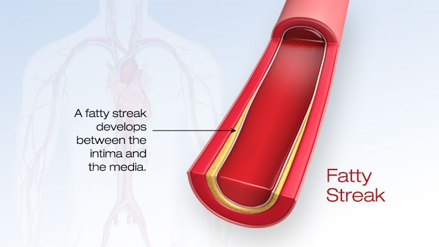
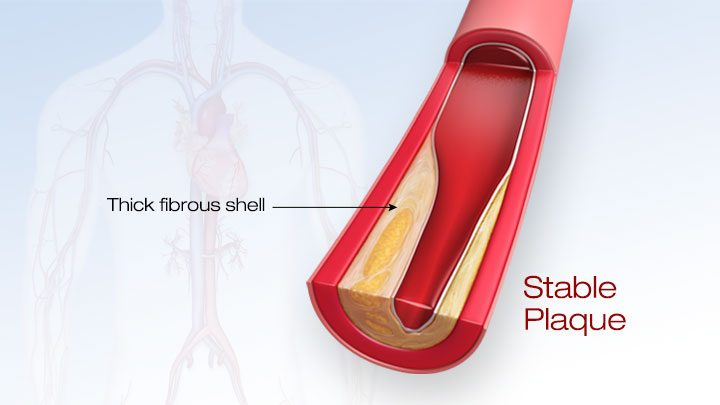
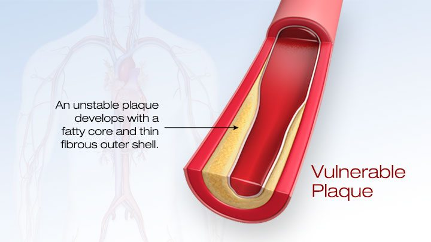
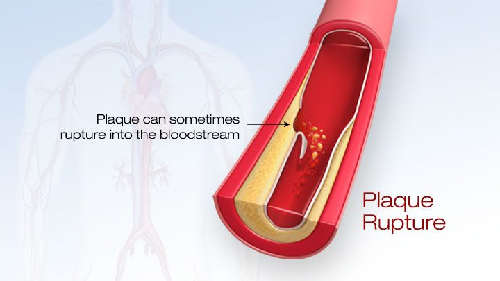
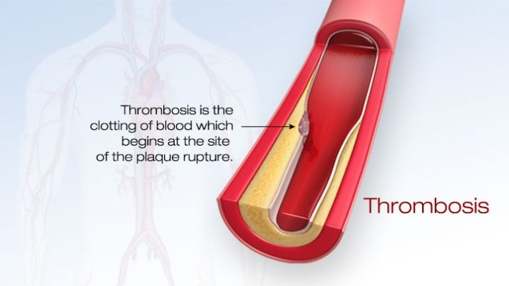
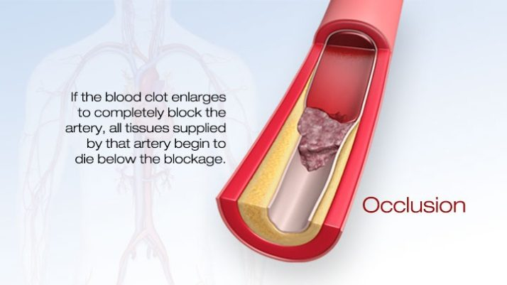
2.2 · Peripheral artery disease (and critical limb ischemia) audio after 10/01
Peripheral arterial disease (also called peripheral arterial occlusive disease) is a lack of blood flow to muscle relative to its metabolism, producing pain in the affected muscle groups. The pathophysiology is similar to coronary artery disease, and 50% of patients with it also have coronary artery disease. The chain: less flow to the extremity → less tissue perfusion → less oxygen and nutrient to muscle → tissue damage and pain. Severity depends on the degree of narrowing, the number of arteries involved and the patient’s activity level. Lower-extremity disease sits at three segments: aortoiliac, femoral-popliteal and tibial.
Also tested
- Claudication history. The history asks where the pain is, how far the patient can walk before it starts, whether that distance has changed, and how long rest takes to relieve it.
- Smoking and peripheral artery disease. Cigarette smoking triples the risk of peripheral artery disease compared with nonsmokers, and smoking cessation heads the list of risk-factor reduction measures for every patient with the disease.
- Antiplatelet therapy in peripheral artery disease. Antiplatelet therapy (aspirin, clopidogrel or cilostazol) decreases the overall risk of cardiovascular disease from myocardial infarction and stroke and improves walking distance.
- Acute limb ischemia. Numbness over the dorsum of the foot is often the earliest neurologic sign, because light-touch sensory fibers are highly susceptible to ischemia.
- Ischemic rest pain. It responds poorly to analgesics, even narcotics, and is relieved instead by dependency, hanging the leg over the bed or walking around.
- Ischemic ulcers of critical limb ischemia. They usually appear at the toe tips and between digits, where arterial branches terminate, and at areas of increased focal pressure such as the metatarsal heads.
- Ankle-brachial index. A value between 0.4 and 0.9 is the claudication band, matching exertional calf pain relieved by rest; the lower of the two legs is taken as the overall index.
Risk factors
- Age: older than 60 with no other risk factors, or 50 with risk factors (smoking, diabetes, hypertension, hyperlipidemia, sedentary lifestyle, obesity).
- Males > females; family history of peripheral arterial disease, cardiovascular disease or stroke.
- Cigarette smoking — three times the risk of nonsmokers; diabetes mellitus; dyslipidemia; hypertension; obesity.
- Elevated homocysteine — an amino acid associated with earlier-onset atherosclerosis.
Claudication: the site of the pain names the level of the block
Intermittent claudication (Latin claudicare, to limp) is pain in one or more lower-extremity muscle groups brought on by activity and relieved by rest, usually within about 10 minutes — an ache, cramp, numbness or fatigue, analogous to angina in the heart. Its severity depends on the degree of stenosis, the collateral circulation and the vigor of exercise. Many patients with risk factors report few or no symptoms, so ask about functional capacity and decline in activity over time.
| Where it hurts | Level of disease | Pulse clue |
|---|---|---|
| Buttock and hip (aching; hip or thigh weakness with walking) | Aortoiliac (about 30%) | Unilateral or bilateral diminished femoral pulse; severe disease causes erectile dysfunction |
| Thigh | Common femoral artery | Normal femoral pulses, decreased distal pulses |
| Upper two-thirds of the calf — the most common | Superficial femoral artery (about 60%) | — |
| Lower third of the calf | Popliteal artery | — |
| Foot | Tibial and peroneal arteries | — |
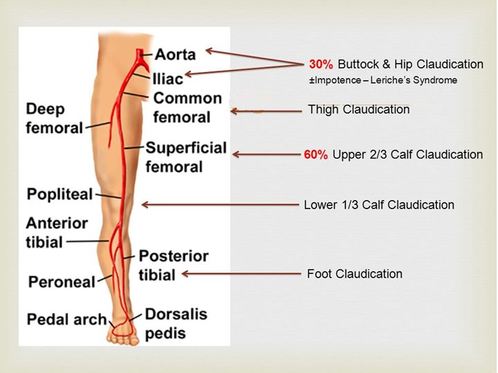
Critical limb ischemia: rest pain, ulcers, gangrene
Ischemic rest pain is constant — throbbing, burning or severe shooting — with cool feet, localized to the forefoot and toes, worse on elevation or reclining (gravity no longer helps arterial flow) and not controlled by analgesics, even narcotics. It wakes the patient at night; some sleep in a recliner. The paradox: it is relieved by hanging the leg over the edge of the bed or by walking around, because dependency uses gravity to perfuse the limb — the opposite of claudication, which walking causes.
- Ischemic ulcers: painful, often begin as minor trauma, fail to heal because the blood supply cannot meet the demands of healing tissue. Found at the ends of arterial branches (tips of the toes, between the digits) and at pressure points (metatarsal heads). Dry, punched out, painful, minimal bleeding, often ringed by black necrotic tissue. Can lead to osteomyelitis.
- Dry gangrene: hard and dry, usually the distal toes, with a clear demarcation between healthy and necrotic tissue — common in peripheral arterial disease.
- Wet gangrene = surgical emergency: moist, edematous, blistering, with bacterial infection and a risk of sepsis — often spore-forming Clostridium species that release toxins and gas (gas gangrene).
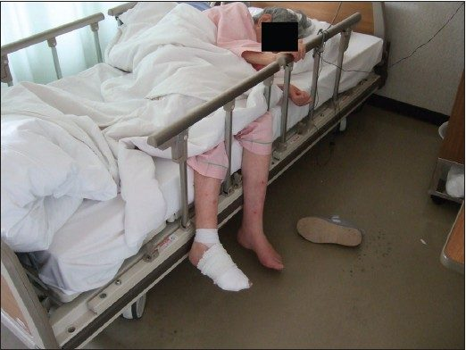
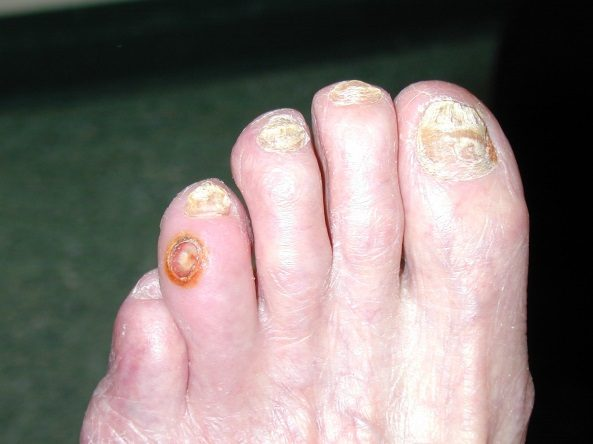
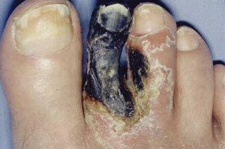
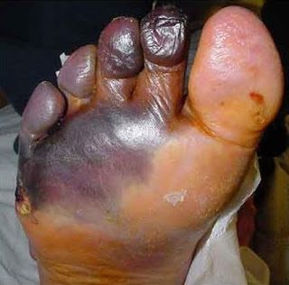
Physical examination
- Best supine, after the patient has warmed up and rested 15 minutes; in advanced ischemia, time spent supine can bring on pain.
- Vital signs: blood pressure in both arms — the higher reading is used for the ankle-brachial index. Fever suggests an infected wound or ulcer; tachycardia and tachypnea suggest infection.
- Skin: xanthelasma; a midline sternotomy scar (prior coronary bypass).
- Inspection of the legs (depends on duration and severity): dry, thin, brittle, shiny skin when flow is severely reduced; poor wound healing; loss of hair and toenails; brittle nails; muscle atrophy.
- Temperature (back of the hand) is the marker for perfusion: the ischemic limb is cool, and the line where the temperature changes gives a rough indication of the level of occlusion.
- Pulses (brachial, radial, aorta, femoral, popliteal, dorsalis pedis, posterior tibial) are diminished or absent below the stenosis. If a pulse is hard to feel, use a handheld Doppler. Capillary refill longer than 2 seconds. Assess sensory and motor function.
- The six P’s of arterial assessment: pain, pallor, pulselessness, paresthesia, paralysis, poikilothermia (difficulty regulating temperature).
- Bruits over the abdominal aorta and the iliac, femoral and popliteal arteries.
- Reactive hyperemia is the transient rise in blood flow after a brief ischemic period: metabolites (carbon dioxide, lactic acid, adenosine) accumulate and cause vasodilation. Dependent rubor is the reddish color the skin takes when the leg hangs down.
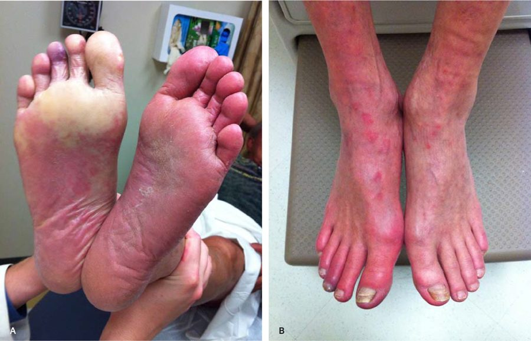
Differential diagnosis of leg pain
| Condition | What separates it |
|---|---|
| Thrombus at a plaque / embolism | Embolic debris from a proximal source gives acute pain |
| Venous insufficiency | Calf swelling and discomfort with standing; swelling worse with prolonged walking |
| Peripheral neuropathy | Elderly with diabetes or alcoholism; continuous burning in the foot, unaffected by exercise |
| Osteoarthritis (hip, knee) | Often present at rest and worse with exercise; better when weight is off the joint |
| Spinal stenosis | Claudication-like, with numbness and weakness; relieved by rest and by sitting down or leaning forward |
Diagnostic testing
ABI (ankle-brachial index) — a simple bedside test and the important initial test. Each leg’s index is its higher ankle pressure (posterior tibial or dorsalis pedis) divided by the higher arm pressure; the lower of the two legs is the patient’s overall index.
| Ankle-brachial index | Meaning |
|---|---|
| 0.9 – 1.3 | Normal |
| 0.4 – 0.9 | Claudication |
| 0 – 0.4 | Rest pain, tissue loss (ulcer, gangrene) |
| Above 1.3 | Abnormal — calcified, non-compressible arteries (for example, a diabetic patient) |
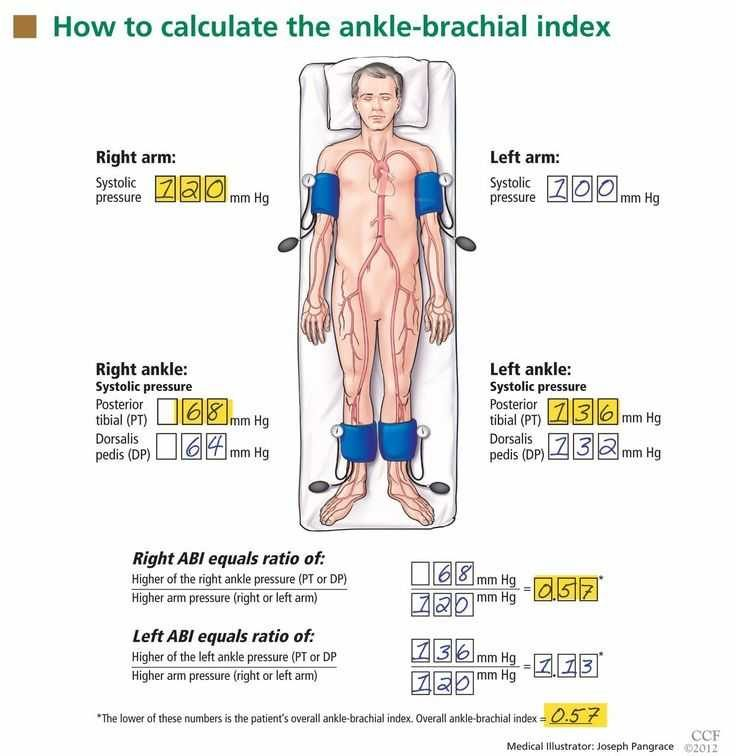
- Pulse volume recordings (plethysmography), done in a vascular laboratory: pneumatic cuffs sense segmental volume changes with each pulse and locate the site and severity of disease (slide 45, a picture-only slide).
- Duplex ultrasound: noninvasive, shows flow status, no contrast and no radiation — the mainstay and initial imaging when stenosis or obstruction is suspected.
- Computed tomography angiography delineates the anatomy with contrast; contraindicated with contrast allergy or decreased renal function. Magnetic resonance angiography is the alternative with a contrast allergy; contraindicated with pacemakers and intracranial aneurysm clips.
- Conventional angiography is the gold standard — invasive (vascular puncture, catheter at the stenosis, contrast injected), the most accurate and informative test.
- Computed tomography angiography, magnetic resonance angiography and angiography are used mainly to guide a planned intervention (endovascular or open).
- Labs: electrocardiogram; complete blood count with differential; lipid profile; comprehensive metabolic panel with fasting glucose; renal function (these patients are at risk of renal insufficiency); hemoglobin A1c (average glucose over three months).
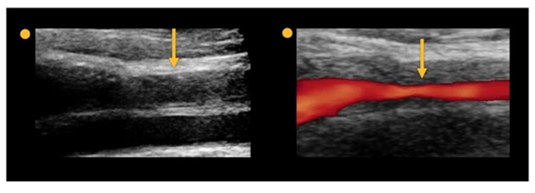
Management
Risk-factor reduction first:
- Smoking cessation.
- Blood pressure goal below 140/90 mmHg, or below 130/80 mmHg with diabetes or renal failure.
- Diabetes control; weight control.
- Exercise therapy: refer to an exercise rehabilitation program — supervised is more successful than home-based. Consistent moderate exercise improves walking distance; at least 30–45 minutes three times a week.
Drug therapy (names only; no doses):
- Antiplatelets: aspirin, clopidogrel, cilostazol (cilostazol is also a vasodilator). They lower overall cardiovascular risk from heart attack and stroke and improve walking distance.
- Statins: simvastatin, pravastatin; target low-density lipoprotein below 100 mg/dL, or below 70 mg/dL at high risk (diabetes, continued smoking).
- Pentoxifylline (a xanthine derivative) helps blood flow through narrowed arteries.
- Hyperhomocysteinemia: folic acid with vitamins B12 and B6.
Revascularization is recommended for claudication with severe functional disability and an inadequate response to exercise or drug therapy:
- Endovascular (minimally invasive, like a heart catheterization): percutaneous transluminal angioplasty with or without a stent; atherectomy.
- Bypass graft (invasive, highly effective) with a saphenous vein or synthetic graft — principally for severe critical limb ischemia. Complications: heart attack and stroke, graft infection, peripheral embolization.
- Endarterectomy removes plaque from inside the artery by open surgery.
- Amputation.
2.3 · Arterial thrombosis and embolism: acute limb ischemia and atheroembolism audio after 10/01
Acute limb ischemia is the sudden occlusion of a previously patent artery, with abrupt severe pain and absent pulses in the limb. It is a vascular emergency.
- Thrombosis can occur locally in a previously patent but stenotic artery.
- Embolus — thromboemboli are the most common: a dislodged intravascular thrombus travels distally and occludes a smaller artery. The heart is the source in 80–90% (atrial fibrillation; left ventricular thrombus after a heart attack). Atheroemboli are less likely to produce acute limb ischemia.
- History: sudden onset; there may or may not be prior claudication.
- Examination: the six P’s; a cold, cyanotic limb; absent pulses distal to the occlusion; test strength and sensation. Light-touch fibers are highly sensitive to ischemia, so sensory loss over the dorsum of the foot is often the earliest neurologic sign.
Also tested
- Immediately threatened limb. A limb that is immediately threatened is salvageable only with immediate revascularization, so it should preferentially undergo further evaluation and treatment in a surgical suite, without delay.
- Acute limb ischemia and imaging. Viable and marginally threatened limbs have sufficient time for vascular imaging such as computed tomography angiography; immediately threatened limbs go to a surgical suite.
Rutherford categories
| Category | Prognosis | Sensory loss | Weakness | Doppler (arterial / venous) | What happens next |
|---|---|---|---|---|---|
| I · Viable | No immediate threat | None | None | Audible / audible | Time for imaging (for example computed tomography angiography) |
| IIA · Marginally threatened | Salvageable if treated promptly | None, or minimal (toes) | None | Often inaudible / audible (slide 62 says “often audible”; see the box above) | Time for imaging |
| IIB · Immediately threatened | Salvageable with immediate revascularization | More than the toes; rest pain | Mild to moderate | Usually inaudible / audible | Straight to the surgical suite |
| III · Irreversible | Major tissue loss or permanent nerve damage | Profound, anesthetic | Profound, paralysis (rigor) | Inaudible / inaudible | Major amputation whatever the therapy; imaging not immediately needed |
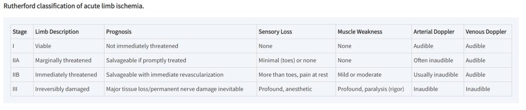
Diagnosis and treatment
- Testing depends on the category: magnetic resonance angiography, computed tomography angiography or catheter-based arteriography.
- Immediate vascular surgery consult.
- Anticoagulation with intravenous heparin.
- Intra-arterial catheter-directed thrombolysis when the ischemia is less than 14 days old (alteplase is the thrombolytic).
- Thromboembolectomy (catheter or surgical); arterial bypass; amputation.
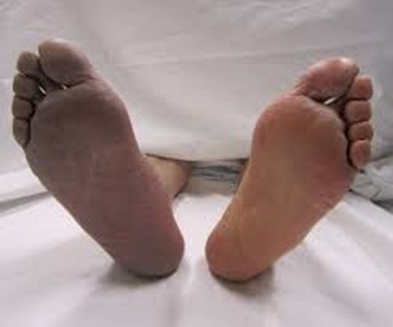
Atheroembolism — “blue toe” syndrome
Multiple small deposits of fibrin, platelets and cholesterol debris embolize from proximal atherosclerotic lesions (an abdominal aortic aneurysm can do it too). They lodge in the small vessels of muscle and skin and may not block large vessels, so the distal pulses usually stay palpable. The patient has acute pain and tenderness at the embolization site; digital occlusion gives ischemia and “blue toe” syndrome, and digital necrosis and gangrene may follow. Localized tenderness, pallor and livedo reticularis appear where the emboli land. The deck gives no diagnostic test, treatment or prognosis for atheroembolism.
2.4 · Carotid artery disease audio after 10/01
Atherosclerotic plaque causes stenosis, embolization and thrombosis, and atherosclerosis has a predilection for the extracranial carotid artery (the bifurcation and bulb, where flow recirculates in a low-shear region).
- Responsible for 80% of new noncardioembolic strokes.
- As internal carotid stenosis increases, flow grows more turbulent and the risk of atheroembolization rises.
- Strokes come most often from plaque rupture, not from occlusion with thrombosis.
- Asymptomatic patients (narrowing, with no ischemic stroke or transient ischemic attack in the last six months) with significant stenosis outnumber symptomatic ones 4:1.
- Symptomatic: focal neurologic symptoms, a transient ischemic attack (focal loss of neurologic function lasting less than 24 hours) or a stroke. Focal symptoms (speaker notes): sudden intense headache, paralysis, numbness or tingling on one side, vision changes, drowsiness, and amaurosis fugax — interrupted retinal flow causing transient monocular blindness, fading like a curtain descending.
- Examination: inspect the neck pulses; have the patient hold their breath and auscultate each carotid separately, diaphragm then bell, for a bruit; palpate one side at a time. Add ophthalmic, cardiac, peripheral vascular, neurologic and musculoskeletal examination.
Also tested
- Amaurosis fugax. Interrupted blood flow to the retina causes transient loss of vision in one eye, a rapid fading like a curtain descending, and is a focal symptom of carotid disease.
- Carotid stenosis. Asymptomatic patients with significant carotid stenosis outnumber symptomatic patients by 4:1, which is why carotid disease is often found before any stroke or attack.
Diagnostic testing
- Duplex ultrasonography — the most widely used initial screening tool, also used to follow patients serially for progression or after intervention.
- Computed tomography angiography or magnetic resonance angiography image the cervical and intracranial carotid and vertebral circulation and the brain.
- Digital subtraction angiography — invasive and the gold standard, but not used for screening; it guides therapeutic interventions.
- The United States Preventive Services Task Force recommended in 2014, and reaffirmed in 2021, against screening asymptomatic adults for carotid stenosis — the harms outweigh the benefits (speaker notes, slide 76).
Management
| Who | What |
|---|---|
| Symptomatic or asymptomatic, stenosis below 50% | Medical management |
| Symptomatic, stenosis above 70% | Surgery |
| Asymptomatic, stenosis above 80% and life expectancy over 5 years | Surgery |
- Medical: antiplatelets (aspirin, clopidogrel); treat hypertension, diabetes (glycemic control) and hyperlipidemia (statins); smoking cessation — smoking nearly doubles stroke risk; healthy diet, regular exercise, weight reduction with obesity.
- Carotid endarterectomy removes plaque through an incision — the gold standard for high-grade stenosis. Complications: stroke or nerve damage.
- Carotid angioplasty with stenting, usually through the femoral artery (transfemoral) — less invasive, for poor surgical candidates.
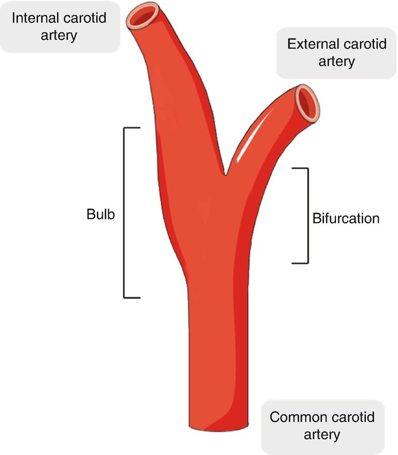
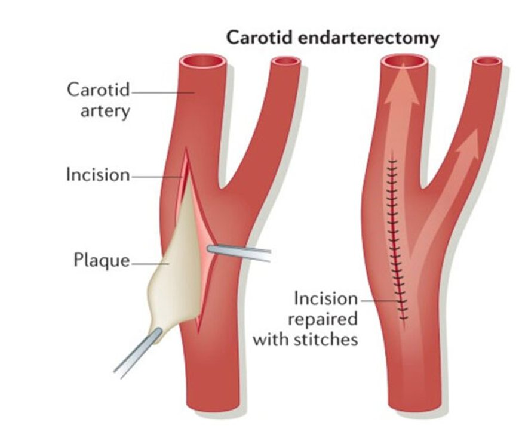
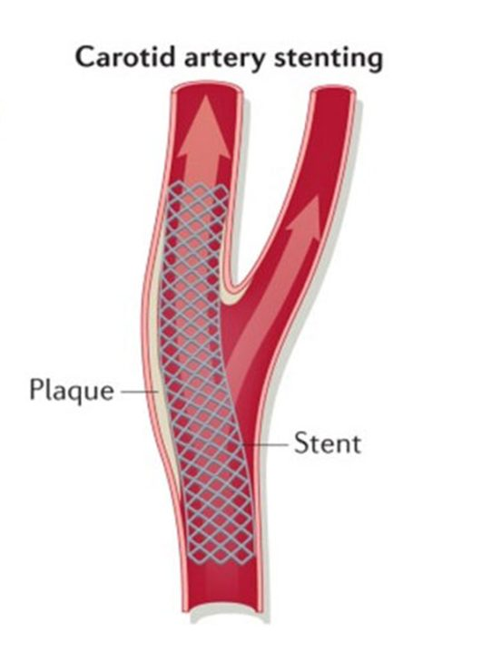
2.5 · Aortic aneurysms: abdominal, thoracic and false audio after 10/01
An aneurysm is a pathologic dilation of a vessel segment — a localized dilation greater than 50% of normal diameter. The infrarenal abdominal aorta averages 2 cm; above 3 cm is aneurysmal. Normal thoracic diameter varies with location, body habitus, sex and age.
- True aneurysms involve all three wall layers. Saccular: only part of the circumference, an outpouching. Fusiform: the whole circumference, a diffusely dilated segment.
- Thoracic aortic aneurysm: ascending, arch or descending. Abdominal aortic aneurysm: the most common site; 90% are infrarenal, usually involving the bifurcation and the common iliacs.
- The thoracic aorta begins at the aortic valve and leaves the thorax through the diaphragm at T12; the abdominal aorta runs from the diaphragmatic hiatus to its bifurcation into the common iliacs at the fourth lumbar vertebra.
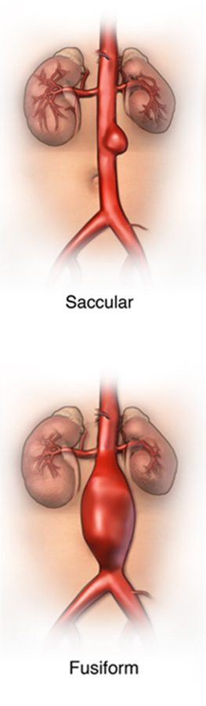
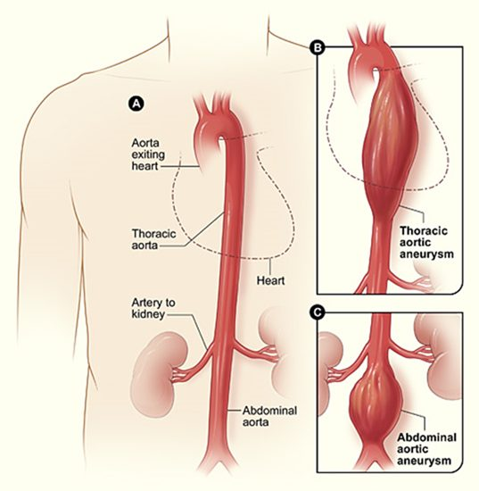
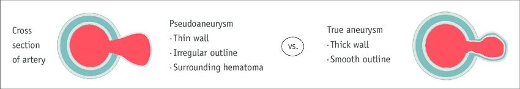
Also tested
- Thoracic aortic aneurysms. Most are asymptomatic and found incidentally on chest radiograph; a history of hypertension is common, and symptoms depend on location.
Epidemiology, cause and risk
- 15,000 deaths a year in the United States from abdominal aortic aneurysm — the only mortality figure in the deck.
- Men > women: 2:1 under 80, 1:1 over 80. Caucasian men have the highest incidence; uncommon in African American, Asian and Hispanic populations.
- Pathophysiology: failure of the major structural proteins (elastin and collagen) in the media; the cause is unclear. Genetic predisposition: Marfan syndrome (FBN1 gene) and Ehlers-Danlos syndrome (COL3A1 gene). Atherosclerosis may weaken the wall mechanically.
- Etiologies: Marfan syndrome (connective tissue disorder); syphilis (destroys the vasa vasorum, the small vessels that supply the walls of larger arteries); vasculitis (Takayasu arteritis, giant cell arteritis); trauma; congenital.
- Risk factors: smoking, current or past — the strongest; male sex; advancing age; Caucasian race; atherosclerosis; hypertension; family history of abdominal aortic aneurysm; other large-artery aneurysms (iliac, femoral, popliteal).
- Protective: female sex (but women’s aneurysms rupture more often); non-Caucasian race; diabetes (reason unknown — perhaps treatment regimens or arterial stiffness).
Abdominal aortic aneurysm: presentation and examination
| State | Presentation |
|---|---|
| Asymptomatic | Often an incidental finding on physical examination |
| Symptomatic, unruptured | Pain with expansion, constant or intermittent, mild to severe, in the abdomen (hypogastrium), back or flank, may radiate to the low back; isolated groin pain (pressure on the femoral nerve); early satiety; embolic “blue toe” |
| Ruptured | Blood escapes into the retroperitoneum. Classic triad in 50%: severe abdominal or back pain, a pulsatile abdominal mass (virtually diagnostic), hypotension. Often misdiagnosed as renal colic, diverticulitis, gastrointestinal hemorrhage or ischemic bowel |
Examination: palpate the aorta and estimate its size; an abdominal bruit is nonspecific; check the peripheral pulses; a pulsatile mass is more likely with rupture; Grey Turner sign (flank ecchymosis) with retroperitoneal hemorrhage. Differential: acute gastritis, appendicitis, urinary tract infection, diverticulitis, pancreatitis, gallstones, large- and small-bowel obstruction, heart attack, peptic ulcer disease.
Abdominal aortic aneurysm: testing, surveillance and rupture risk
- Abdominal X-ray: a calcified outline is visible in 75%; 25% are not calcified and not seen.
- Abdominal ultrasound — the study of choice for initial screening, and for serial documentation of size.
- Computed tomography is better than ultrasound for size, visceral-artery involvement and extent; magnetic resonance imaging is comparable without dye or radiation — useful in stable patients with a dye allergy.
- Computed tomography angiography — the best diagnostic and pre-intervention planning study; it delineates location, size and extent.
- Labs: electrocardiogram (cardiac status); complete blood count (hemoglobin, hematocrit, white cells); comprehensive metabolic panel (renal and liver function); type and crossmatch if transfusion is possible.
| Aneurysm size | Surveillance (American College of Cardiology / American Heart Association) |
|---|---|
| 3.0 – 3.9 cm | Ultrasound every three years |
| 4.0 – 5.4 cm | Ultrasound or computed tomography every 6–12 months |
| Elective repair | 5.0 cm or larger in women; above 5.5 cm in men; or rapid growth — 0.5 cm in six months |
Rupture is rare until the diameter exceeds 5 cm. Risk rises with a diameter above 5.5 cm, expansion above 0.5 cm in six months, continued smoking and hypertension.
Abdominal aortic aneurysm: management
- Medical: manage modifiable risk factors — smoking cessation, aggressive blood pressure control, moderate exercise (running, biking, swimming, hiking).
- Referral to a vascular specialist at 4.5 cm or larger for observation and assessment; urgent referral for aneurysmal pain at any size. Consider vascular surgery referral at 5.0 cm or larger.
- Repair — chosen by age and comorbidities: endovascular aneurysm repair (a modular graft placed through the iliac or femoral arteries lines the aorta and excludes the sac) or open surgery (the diseased segment is replaced with a tube or bifurcated prosthetic graft).
- Symptomatic, unruptured: assess hemodynamic stability, large-bore intravenous catheters, pain control, blood pressure control with beta blockers, and surgical repair (endovascular or open) unless contraindicated.
- Ruptured: hemodynamically unstable — large-bore intravenous catheters, type and crossmatch, surgical emergency.
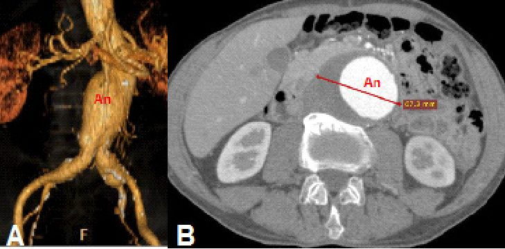
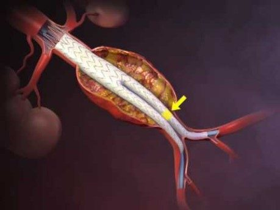
Thoracic aortic aneurysm
- A history of hypertension is common. Most are asymptomatic, found incidentally on a chest X-ray.
- Symptoms depend on location: ascending → aortic regurgitation, heart failure; arch → hoarseness (recurrent laryngeal nerve); descending → dyspnea, stridor, wheezing, cough, dysphagia (compression of the trachea or esophagus).
- Chest X-ray: widened mediastinal shadow; displacement or compression of the trachea or left mainstem bronchus.
- Labs: complete blood count, comprehensive metabolic panel, type and crossmatch.
- Computed tomography angiography is the most widely used test — it shows the entire thoracic and abdominal aorta. Magnetic resonance angiography gives location, extent and size but is time-consuming. Transesophageal echocardiography evaluates the aortic valve and root.
- Surveillance (root, ascending or descending): below 4.5 cm, computed tomography or magnetic resonance imaging every 3–5 years; 4.5–5.4 cm, every 6–12 months.
- Management: smoking cessation, beta blockers, aggressive blood pressure control. Chest or back pain with a known or suspected thoracic aneurysm needs urgent imaging. Repair ALL symptomatic thoracic aneurysms. Asymptomatic repair depends on diameter, location and growth: ascending above 5.5 cm, descending above 6.0 cm, or growth above 0.5 cm per year. Ascending aneurysms often need open surgery with aortic root replacement; descending ones can be repaired open or endovascularly.
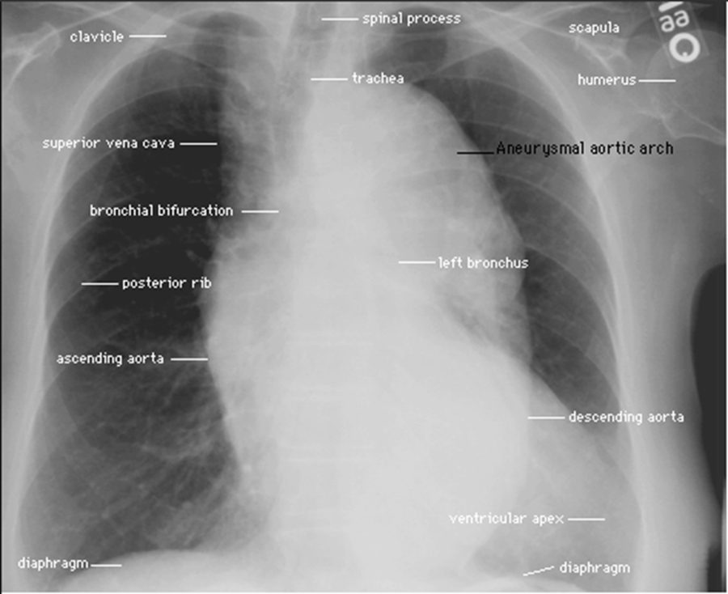
Pseudoaneurysm (false aneurysm)
- A communication between the arterial lumen and the overlying connective tissue after arterial rupture: a blood-filled cavity forms outside the vessel wall and seals the leak as it thromboses.
- Common site: the femoral artery after cardiac catheterization, from laceration by the access needle.
- On imaging (picture only): thin wall, irregular outline, surrounding hematoma — against the true aneurysm’s thick wall and smooth outline.
- Presents with pain from swelling pressure or nerve compression.
- Treatment: watch and wait if below 2 cm (it may thrombose and regress on its own); ultrasound-guided thrombin injection to seal the leak. The deck names no diagnostic test.
2.6 · Aortic dissection audio after 10/01
- Forms from an intimal tear, typically contained by the media: the wall layers separate and create a false lumen within the media where blood can pool (and may clot).
- The most common predisposing factor is degeneration of medial collagen and elastin; Marfan syndrome is the classic medial degeneration.
- Who: age 60s–70s (except Marfan syndrome); males > females; a history of hypertension in most cases.
- Presentation: sudden, severe, tearing or ripping chest pain; its location depends on the site and may change as the dissection propagates distally; syncope; hypertension or hypotension; aortic regurgitation from aortic-root dilatation.
- Diagnosis: the electrocardiogram may be normal; computed tomography of the chest and abdomen delineates the extent; magnetic resonance imaging is good but slower; transesophageal echocardiography.
- Management: stop progression by lowering the pressure — systolic 100–120 mmHg with a beta blocker (esmolol) or a vasodilator (nitroprusside); pain control; surgery to graft and replace the diseased aorta. Untreated acute dissection has a high mortality.
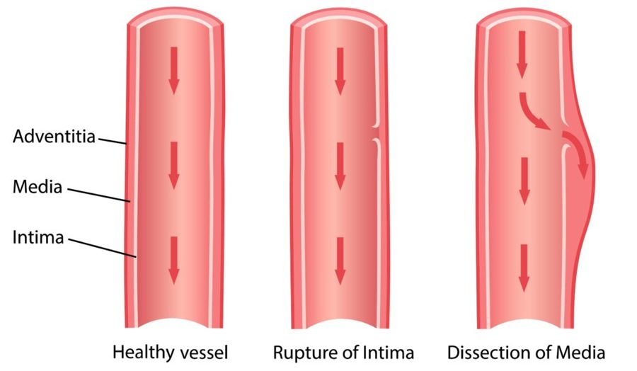
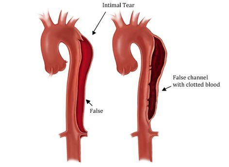
2.7 · The conditions, point by point audio after 10/01
Peripheral arterial disease (peripheral arterial occlusive disease)
Defining feature: exertional muscle pain relieved by rest within about 10 minutes; the site names the level; ankle-brachial index 0.4–0.9
- Definition
- Lack of blood flow to muscle relative to its metabolism, from atherosclerotic narrowing at the aortoiliac, femoral-popliteal or tibial segment; pathophysiology like coronary artery disease.
- Who gets it
- Older than 60 without other risk factors, 50 with them; males > females; half also have coronary artery disease.
- Risk factors
- Age, male sex, family history, cigarette smoking (three times the risk), diabetes, dyslipidemia, hypertension, obesity, elevated homocysteine, sedentary lifestyle.
- Classic signs & symptoms
- Intermittent claudication (calf most common); often asymptomatic, so ask about functional decline. Leriche triad with aortoiliac disease: claudication, absent or diminished femoral pulses, erectile dysfunction.
- Physical exam findings
- Dry, thin, shiny skin; hair and nail loss; brittle nails; muscle atrophy; poor healing; cool limb with a temperature demarcation; diminished or absent pulses below the stenosis; capillary refill over 2 seconds; bruits; positive Buerger test (pallor on elevation, dependent rubor).
- Diagnostics / tests
- Ankle-brachial index (important initial test); pulse volume recordings; duplex ultrasound (mainstay initial imaging); computed tomography or magnetic resonance angiography; conventional angiography (gold standard, to guide intervention); electrocardiogram, blood count, lipids, metabolic panel, renal function, hemoglobin A1c.
- First-line treatment
- Risk-factor reduction: smoking cessation, blood pressure below 140/90 (130/80 with diabetes or renal failure), diabetes and weight control, supervised exercise 30–45 minutes three times a week; antiplatelets (aspirin, clopidogrel, cilostazol), statins, pentoxifylline. Revascularization if disabling despite exercise and drugs.
- Complications
- Critical limb ischemia (rest pain, ulcers, gangrene, osteomyelitis), amputation, renal insufficiency; bypass complications: heart attack, stroke, graft infection, peripheral embolization.
Slides 8–20, 26–35, 40–58
Critical limb ischemia
Defining feature: constant forefoot rest pain, worse on elevation, relieved by dangling the leg or walking; ankle-brachial index 0–0.4
- Definition
- The rest-pain, ulceration and gangrene end of peripheral arterial disease (no formal definition on the slides).
- Who gets it
- Not covered separately.
- Risk factors
- Not covered separately (the peripheral arterial disease list applies).
- Classic signs & symptoms
- Constant throbbing, burning or shooting pain with cool feet, in the forefoot and toes, waking the patient at night, not controlled by narcotics; sleeping in a recliner.
- Physical exam findings
- Painful, dry, punched-out ulcers at toe tips, between digits and over metatarsal heads, with minimal bleeding and black necrotic edges; dry gangrene (clear demarcation) or wet gangrene (moist, edema, blisters).
- Diagnostics / tests
- Ankle-brachial index 0–0.4; the night-pain, recliner, analgesic and non-healing-wound history.
- First-line treatment
- Bypass graft is principally for severe critical limb ischemia; amputation. Wet gangrene is a surgical emergency.
- Complications
- Osteomyelitis; sepsis with wet (often clostridial, gas) gangrene.
Slides 21–25, 37–39, 42, 57–58
Acute limb ischemia (acute peripheral arterial occlusion)
Defining feature: sudden onset of the six P’s in a previously patent artery — a vascular emergency
- Definition
- Sudden occlusion of a previously patent artery, with abrupt severe pain and absent pulses.
- Who gets it
- Patients with an embolic source: the heart in 80–90% (atrial fibrillation, left ventricular thrombus after a heart attack); or local thrombosis at a stenotic artery.
- Risk factors
- Atrial fibrillation; recent heart attack with left ventricular thrombus; existing stenosis (there may or may not be prior claudication).
- Classic signs & symptoms
- Pain, pallor, pulselessness, paresthesia, paralysis, poikilothermia.
- Physical exam findings
- Cold, cyanotic limb; absent pulses distal to the block; sensory loss over the dorsum of the foot is often the earliest neurologic sign; weakness grades the category.
- Diagnostics / tests
- Classify first (Rutherford I, IIA, IIB, III). I and IIA have time for imaging (computed tomography angiography); IIB goes to the surgical suite; III usually needs no imaging. Magnetic resonance angiography, computed tomography angiography or catheter arteriography.
- First-line treatment
- Immediate vascular surgery consult and intravenous heparin; catheter-directed thrombolysis (alteplase) if under 14 days; thromboembolectomy; bypass.
- Complications
- Limb loss: category III needs major amputation whatever the therapy.
Slides 59–67
Atheroembolism (“blue toe” syndrome)
Defining feature: painful blue toe with palpable distal pulses
- Definition
- Multiple small deposits of fibrin, platelets and cholesterol debris embolizing from proximal atherosclerotic lesions.
- Who gets it
- Not covered in the lecture.
- Risk factors
- Proximal atherosclerotic plaque; an abdominal aortic aneurysm can also shed emboli.
- Classic signs & symptoms
- Acute pain and tenderness at the embolization site; a blue toe.
- Physical exam findings
- Distal pulses usually palpable; localized tenderness, pallor and livedo reticularis where the emboli land.
- Diagnostics / tests
- Not covered in the lecture.
- First-line treatment
- Not covered in the lecture.
- Complications
- Digital necrosis and gangrene.
Slides 7, 60, 68, 89
Carotid artery disease
Defining feature: transient ischemic attack or amaurosis fugax (a curtain descending over one eye) with a carotid bruit
- Definition
- Atherosclerotic plaque in the extracranial carotid causing stenosis, embolization and thrombosis.
- Who gets it
- Asymptomatic patients with significant stenosis outnumber symptomatic 4:1; cause of 80% of new noncardioembolic strokes.
- Risk factors
- Smoking (nearly doubles stroke risk); hypertension, diabetes and hyperlipidemia are managed as comorbidities (no dedicated list).
- Classic signs & symptoms
- Asymptomatic, or focal neurologic symptoms, transient ischemic attack (under 24 hours), stroke; amaurosis fugax.
- Physical exam findings
- Carotid bruit (each side separately, breath held, diaphragm then bell); palpate one side at a time.
- Diagnostics / tests
- Duplex ultrasonography (initial screening, serial follow-up); computed tomography or magnetic resonance angiography; digital subtraction angiography (gold standard, not for screening). Do not screen asymptomatic adults.
- First-line treatment
- Medical management below 50%: antiplatelets, blood pressure, glucose and lipid control, smoking cessation, diet, exercise. Endarterectomy (gold standard) for symptomatic above 70% or asymptomatic above 80% with over 5 years’ life expectancy; stenting for poor surgical candidates.
- Complications
- Stroke (usually from plaque rupture); endarterectomy can cause stroke or nerve damage.
Slides 69–78
Abdominal aortic aneurysm
Defining feature: infrarenal aorta above 3 cm; rupture = pain, pulsatile mass, hypotension
- Definition
- Localized dilation over 50% of normal diameter; the infrarenal aorta averages 2 cm, and above 3 cm is aneurysmal. 90% are infrarenal.
- Who gets it
- Men 2:1 under 80 (1:1 over 80); Caucasian men highest; 15,000 deaths a year in the United States.
- Risk factors
- Smoking ever (strongest), male sex, age, Caucasian race, atherosclerosis, hypertension, family history, other large-artery aneurysms. Protective: female sex, non-Caucasian race, diabetes.
- Classic signs & symptoms
- Usually incidental; expansion pain in the hypogastrium, back or flank, groin pain, early satiety, blue toe; rupture triad in 50%.
- Physical exam findings
- Palpable aorta; pulsatile abdominal mass (virtually diagnostic); nonspecific bruit; Grey Turner sign (flank ecchymosis) with retroperitoneal bleeding.
- Diagnostics / tests
- Abdominal ultrasound (initial screening and serial size); X-ray shows calcification in 75%; computed tomography angiography (best diagnostic and planning study); magnetic resonance imaging in stable dye-allergic patients; type and crossmatch.
- First-line treatment
- Smoking cessation, aggressive blood pressure control, moderate exercise, surveillance by size; specialist at 4.5 cm; repair (endovascular or open) at 5.0 cm in women, above 5.5 cm in men, or 0.5 cm growth in six months. Rupture is a surgical emergency.
- Complications
- Rupture (rare below 5 cm; risk up with size, fast growth, smoking, hypertension); distal embolization.
Slides 80–102
Thoracic aortic aneurysm
Defining feature: symptoms by location — aortic regurgitation (ascending), hoarseness (arch), dysphagia or stridor (descending)
- Definition
- Aneurysm of the ascending aorta, arch or descending aorta.
- Who gets it
- A history of hypertension is common.
- Risk factors
- Not covered separately (the general aneurysm list applies).
- Classic signs & symptoms
- Mostly asymptomatic; otherwise by location, from compression of neighboring structures.
- Physical exam findings
- Signs of aortic regurgitation and heart failure with an ascending aneurysm; hoarseness with an arch aneurysm.
- Diagnostics / tests
- Chest X-ray: widened mediastinum, tracheal or left mainstem bronchus displacement. Computed tomography angiography (most widely used); magnetic resonance angiography; transesophageal echocardiography (valve and root). Surveillance every 3–5 years below 4.5 cm, 6–12 months at 4.5–5.4 cm.
- First-line treatment
- Smoking cessation, beta blockers, aggressive blood pressure control; repair all symptomatic aneurysms; asymptomatic: ascending above 5.5 cm, descending above 6.0 cm, or growth over 0.5 cm a year.
- Complications
- Aortic regurgitation and heart failure (ascending); airway and esophageal compression (descending).
Slides 82–88, 104–110
Pseudoaneurysm (false aneurysm)
Defining feature: a painful femoral swelling after cardiac catheterization — blood outside the wall
- Definition
- A blood-filled cavity outside the vessel wall, communicating with the lumen after arterial rupture, that seals as it thromboses.
- Who gets it
- Patients after cardiac catheterization (femoral artery).
- Risk factors
- Laceration of the artery by an access needle.
- Classic signs & symptoms
- Pain from swelling pressure or nerve compression.
- Physical exam findings
- Not covered in the lecture (imaging picture: thin wall, irregular outline, surrounding hematoma).
- Diagnostics / tests
- Not covered in the lecture (ultrasound appears only as guidance for treatment).
- First-line treatment
- Watch and wait if below 2 cm (may thrombose and regress); ultrasound-guided thrombin injection.
- Complications
- Not covered in the lecture.
Slides 112–113
Aortic dissection
Defining feature: sudden tearing or ripping chest pain that moves as the dissection propagates
- Definition
- An intimal tear, usually contained by the media, separating the wall layers into a false lumen within the media.
- Who gets it
- Ages 60–70s (younger in Marfan syndrome); males > females.
- Risk factors
- Hypertension (most cases); Marfan syndrome; medial collagen and elastin degeneration (the most common predisposing factor).
- Classic signs & symptoms
- Sudden severe tearing chest pain whose location depends on, and changes with, the dissection; syncope.
- Physical exam findings
- Hypertension or hypotension; aortic regurgitation from root dilatation.
- Diagnostics / tests
- Electrocardiogram may be normal; computed tomography of the chest and abdomen for extent; magnetic resonance imaging (slower); transesophageal echocardiography.
- First-line treatment
- Lower systolic pressure to 100–120 mmHg with a beta blocker (esmolol) or nitroprusside; pain control; surgical grafting and replacement.
- Complications
- High mortality if untreated; aortic regurgitation.
Slides 114–118
2.8 · Populations audio after 10/01
| Population | What the deck gives |
|---|---|
| Infant, child, adolescent | Nothing — the deck has no content for these groups. |
| Adult | Peripheral arterial disease from age 50 with risk factors. Aortic dissection in younger adults means Marfan syndrome (the usual age is the 60s–70s). |
| Elderly | Peripheral arterial disease from older than 60 without risk factors. Abdominal aneurysm risk rises with advancing age, and the male excess narrows from 2:1 to 1:1 after 80. Dissection peaks in the 60s–70s. |
3 · Cardiomyopathy
Lecture 28 · Grady G. Carter, MSHS, PA-C · Zoom, Thursday 1 October 2026
Instructional Objectives
CARDIOMYOPATHY — Grady G. Carter, MSHS, PA-C
- Compare and contrast the etiologies, epidemiology, risk factors, clinical manifestations, differential diagnosis, diagnostic testing (including ordering and interpretation), management (acute and chronic, including applicable rehabilitative and palliative care), appropriate referrals, patient education, and prognosis of the following cardiomyopathies:
- Restrictive cardiomyopathy
- Hypertrophic cardiomyopathy
- Dilated cardiomyopathy
- Stress cardiomyopathy
- Myocarditis
- Identify medical care strategies for cardiomyopathies for the following populations.
- adolescent
- adult
- elderly
Quoted as the syllabus prints it (page 16), including its own numbering: items 2–6 are the five cardiomyopathies of objective 1, item 7 is the second real objective, and items 8–10 are its population list.
⏳ Lecture audio emphasis to be added after 10/01. This lecture is given on Zoom on Thursday 1 October. Everything below is built from the slides only; no ★ marks yet. The deck’s six embedded videos (slides 7, 19, 63, 80, 81, 92) are not reproduced here — watch them in the lecture.
His standing rules (Exam 4 recordings): no dosing, no mechanism-of-action questions, generic names only, no acronyms in questions. The opening mechanics slides (preload, afterload, stroke volume, cardiac output, ejection fraction; slides 3–13) are background from the heart failure lecture: their formulas are not tested, and the New York Heart Association table on slide 14 is the same one taught in Heart Failure (Exam 4), so it is not repeated here.
Where the slides disagree with themselves
- Dilated cardiomyopathy and wall thickness: slide 18 says “little or no cardiac wall hypertrophy”; slide 37 says its electrocardiogram “may show left ventricular hypertrophy”. Neither is used as a way to tell it apart from anything.
- Slide 76 heads amiodarone and disopyramide “Arrhythmogenics for sudden cardiac death prevention” — the wrong word. They are antiarrhythmics; slide 78 says amiodarone is “proven to reduce incidence and risk of cardiac sudden death”.
- Biopsy wording: “endocardial biopsy” (slide 41, dilated) vs “endomyocardial biopsy” (slides 55, 97). For dilated cardiomyopathy just learn that the biopsy is not routine and rarely useful.
- Slide 98 calls verapamil and diltiazem “cardioselective” calcium channel blockers; its speaker notes call them non-dihydropyridines with cardiodepressant properties. Learn them by name.
- Slide 103’s picture says the octopus-trap shape is seen “on an X-ray”; the deck’s actual tests are the echocardiogram (apical and mid-segment wall-motion abnormality) and catheterization.
- Slide 105 lists “medication management for symptomatic relief” and implantable defibrillator placement “in select cases” between the adolescent and adult lists without assigning them to either.
- Digoxin is listed as a second-line drug for dilated cardiomyopathy (slide 42) — the heart failure lecture is tested on the 2022 guideline, which treats digoxin differently, so it is not keyed for dilated cardiomyopathy. Its place as a positive inotrope to avoid in hypertrophic cardiomyopathy (slide 77) is clean.
- Slide 80’s video is titled “Surgical Myomectomy”; the operation is a septal myectomy (slide 79).
Where each objective is answered
| Objective | Answered in |
|---|---|
| 1 · 2. Restrictive cardiomyopathy | 3.5 and 3.7 |
| 1 · 3. Hypertrophic cardiomyopathy | 3.4 and 3.7 |
| 1 · 4. Dilated cardiomyopathy | 3.2 and 3.7 |
| 1 · 5. Stress cardiomyopathy | 3.6 (Takotsubo) and 3.7 |
| 1 · 6. Myocarditis | 3.3 and 3.7 |
| 7. Populations (adolescent, adult, elderly) | 3.8 · slides 105–107 answer it directly |
3.1 · Overview: three shapes of a failing muscle audio after 10/01
Cardiomyopathies are a group of diseases of the myocardium — the muscular middle layer of the heart wall, between the epicardium and the endocardium, whose impairment leaves the heart unable to fill and/or contract properly. The overview names three structural types; myocarditis and stress (Takotsubo) cardiomyopathy are taught after them.
| Dilated | Hypertrophic | Restrictive | |
|---|---|---|---|
| Picture | Enlarged, thin-walled ventricle | Enlarged, stiff septum | Stiff walls, normal-size ventricles, big atria |
| Failure | Systolic (cannot squeeze) | Diastolic ± outflow obstruction | Diastolic (cannot fill) |
| Ejection fraction | Reduced (below 40%) | Normal; above 75% late | Preserved until late |
| Heart sound | Third heart sound | Fourth heart sound | Fourth heart sound if no regurgitation |
| Frequency | Most common | 1 in 500 | Least common |
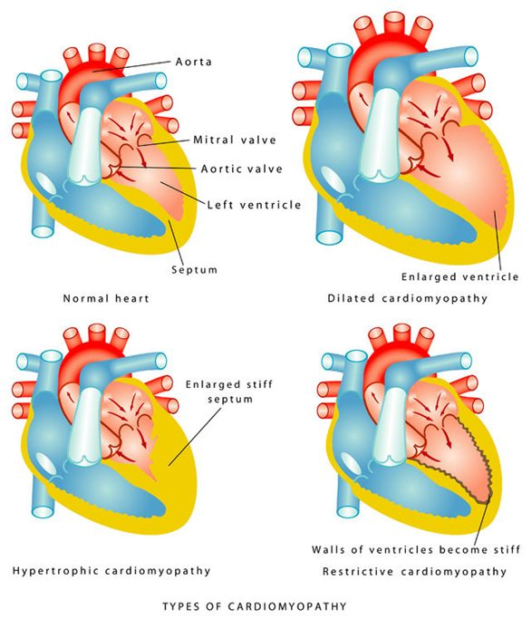
When to refer to cardiology (slide 15): to establish care, consider genetic testing, review any high-risk features, and discuss medications or the need for an intervention.
3.2 · Dilated cardiomyopathy audio after 10/01
The most common type. The muscle cannot contract effectively in the absence of severe occlusive coronary artery disease or pressure/volume overload (hypertension, valvular disease). One or both ventricles dilate and contract poorly; total cardiac mass rises; adverse remodeling produces a globular (round) heart; the result is systolic dysfunction. As the valve apparatus is distorted, mitral regurgitation (earlier) and tricuspid regurgitation develop; rising end-systolic volume drives further dilation; arrhythmias and thromboembolism follow.
Also tested
- Anticoagulation in dilated cardiomyopathy. Anticoagulants should be restricted to patients in atrial fibrillation, with artificial valves or with a known mural thrombus.
- Prognosis of symptomatic dilated cardiomyopathy. Once symptoms emerge, prognosis is poor overall, with 50% mortality at five years, largely from progressive disease and sudden cardiac death due to arrhythmia. The course depends on response to therapy.
- Gastrointestinal findings of dilated cardiomyopathy. Congestive enlargement of the liver (hepatomegaly), hepatojugular reflux and ascites, all from venous congestion as the failing heart backs up blood.
- Anticoagulation in dilated cardiomyopathy. Dilated ventricles carry thromboembolic risk; a known mural thrombus is one of three indications to start anticoagulation, with atrial fibrillation and an artificial valve.
- B-type natriuretic peptide. It is released when ventricular filling pressures are high; a level below 100 pg/mL means heart failure is excluded as the explanation for current symptoms.
Who and why
- 10,000 deaths and 46,000 hospitalizations a year in the United States. Idiopathic dilated cardiomyopathy is the primary indication for cardiac transplantation.
- Most present at 20–60 (children and older adults can have it); males > females; high rate in African Americans.
- Causes (“the complete list is extensive”): idiopathic (common, probably genetic); familial (common, up to 35%, most often autosomal dominant; research on the lamin A/C gene); infectious myocarditis — viral (coxsackievirus, parvovirus B19, influenza, human immunodeficiency virus) or parasitic (Trypanosoma cruzi, Chagas disease, spread by triatomine “kissing” bugs in South and Central America and Mexico); chemotherapy; long-term excess alcohol — function can recover if intake is reduced or stopped; thiamine (vitamin B1) deficiency; systemic lupus erythematosus and rheumatoid arthritis; peripartum cardiomyopathy (rare; the last trimester to 6 months after delivery).
- History to take: hypertension, angina, coronary disease, anemia, thyroid disease, breast cancer and chemotherapy, prior heart failure or myocardial injury, arrhythmias, thromboembolism; tobacco, alcohol, illicit drugs; family history of cardiomyopathy or sudden death.
Presentation
- Heart failure symptoms: progressive dyspnea on exertion (ask how far they could walk 3 months and 6 weeks ago, and now), fatigue, atrial or ventricular arrhythmias (skipped or fast beats), orthopnea, paroxysmal nocturnal dyspnea, peripheral edema with rising weight and abdominal girth.
- Examination reflects the level of decompensation — left heart failure before right: tachypnea, tachycardia, high or low blood pressure, irregular pulse, narrow pulse pressure (a low systolic pressure reflects a low stroke volume); crackles, pleural effusions (diminished breath sounds), cyanosis; laterally displaced point of maximal impulse, mitral and tricuspid regurgitation murmurs, third heart sound (a large volume of blood striking a very compliant ventricle), jugular venous distension, cool extremities, edema; congestive hepatomegaly, hepatojugular reflux (neck veins distend with firm pressure over the liver), ascites.
- Murmurs: mitral regurgitation is holosystolic, loudest at the apex, radiating to the left axilla, louder with handgrip or squatting; tricuspid regurgitation is holosystolic at the lower left sternal border, radiating to the right sternum and xiphoid but not the axilla, slightly louder with inspiration.
- Differential: acute coronary syndrome, valvular disease, acute pericarditis, cardiac tamponade, hyperthyroidism, myocarditis.
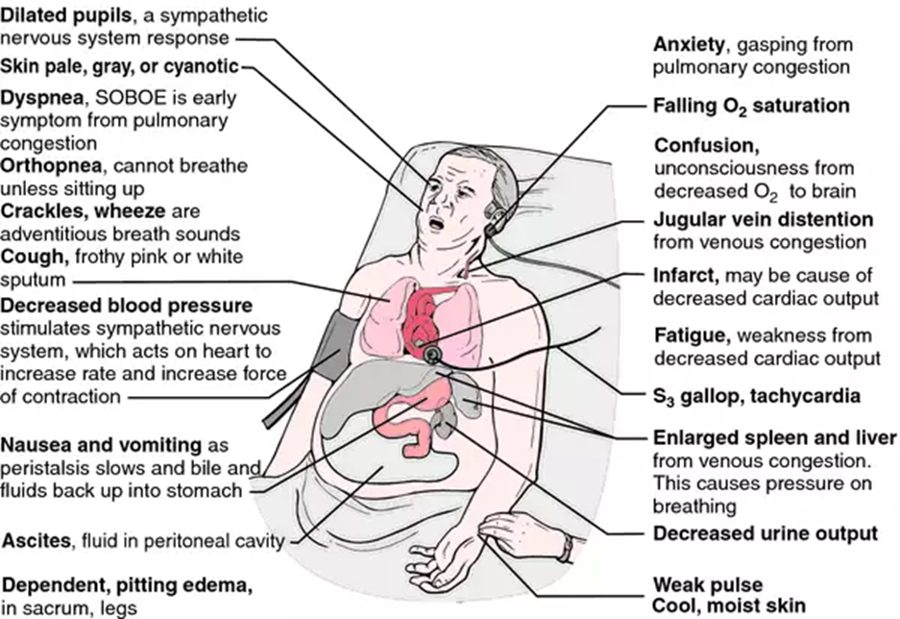
Diagnostic testing
- Labs: complete blood count (anemia), metabolic panel (electrolytes, renal function), liver function (raised in alcoholic disease, hemochromatosis), thyroid function.
- Electrocardiogram — usually abnormal; a normal electrocardiogram almost rules dilated cardiomyopathy out. It may show atrial fibrillation, premature ventricular contractions and conduction delay (left bundle branch block).
- Echocardiogram: dilated, thin walls (the prominent feature); ejection fraction below 40%; all four chambers may be dilated; hypokinesis; segmental wall-motion abnormalities; tricuspid or mitral regurgitation; possible thrombus.
- Chest radiograph: cardiomegaly, pleural effusions, pulmonary edema — Kerley B lines (1–2 cm horizontal lines meeting the pleura at right angles).
- B-type natriuretic peptide is elevated (released at high ventricular filling pressures); below 100 pg/mL excludes heart failure.
- Cardiac magnetic resonance imaging with gadolinium identifies inflammatory, ischemic or infiltrative processes (sarcoidosis, hemochromatosis).
- Biopsy — not routine and rarely useful: only for recent, rapidly deteriorating function, or systemic disease that can involve the heart (hemochromatosis, sarcoidosis, amyloidosis).
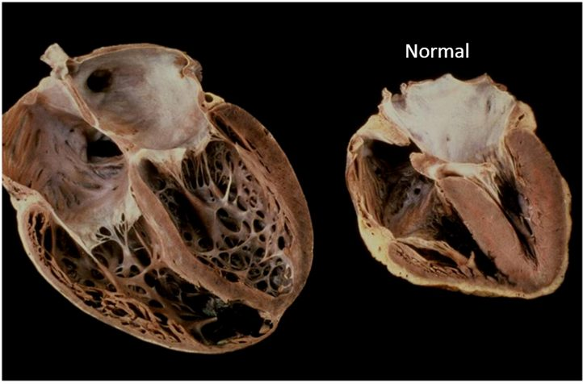
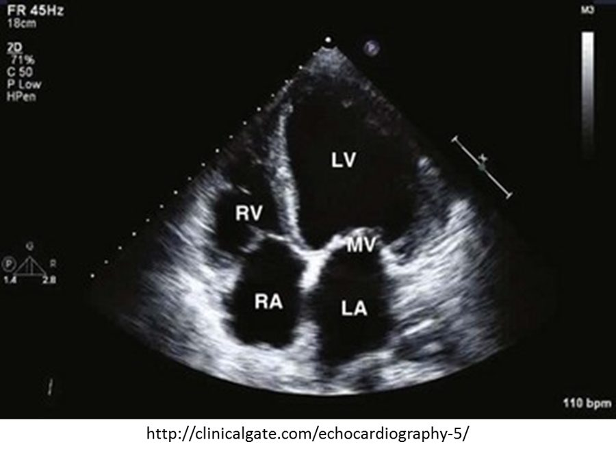
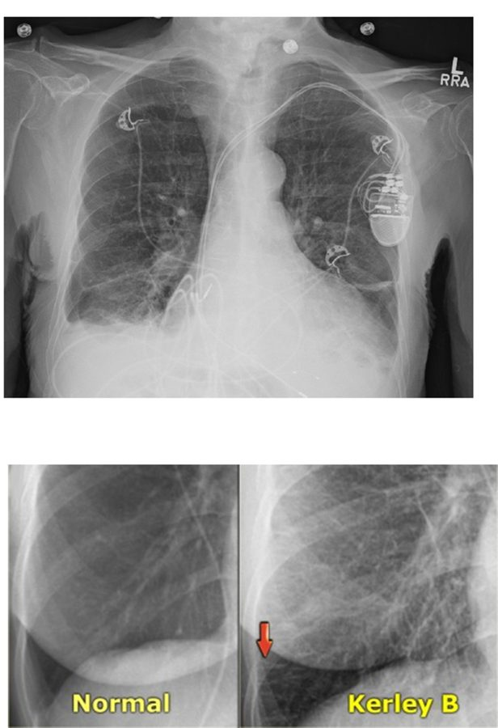
Management
Treatment is essentially that of chronic heart failure; every patient, whatever the cause, gets a beta blocker and an angiotensin-converting enzyme inhibitor (speaker notes, slide 42).
- Drug classes: angiotensin-converting enzyme inhibitors (the criterion standard; they lower mortality; for example lisinopril); beta blockers (carvedilol, bisoprolol, metoprolol — lower mortality); angiotensin receptor blockers (losartan); aldosterone receptor blocker (spironolactone, with an angiotensin-converting enzyme inhibitor); sacubitril/valsartan; nitrates (pulmonary edema); diuretics (loop diuretics are the mainstay); antiarrhythmics (amiodarone for supraventricular and nonsustained ventricular tachycardia); anticoagulants.
- Anticoagulation only for atrial fibrillation, an artificial valve or a known mural thrombus.
- Devices: biventricular pacemaker for moderately severe left ventricular dysfunction; implantable cardioverter-defibrillator if the ejection fraction is below 35% after maximum medical therapy; a biventricular defibrillator combines them.
- Left ventricular assist device (pumps blood from the left ventricle into the aorta): a bridge to transplantation or to recovery of function, or destination therapy for those who cannot have a transplant; patients may live more than 5 years with one. Cardiac transplantation.
- Education: the medication regimen and follow-up; remove the offending source (alcohol, nutritional deficiency, cardiotoxic agents); sodium below 2 g a day; genetic counseling with a family history.
- Prognosis: depends on response to therapy; overall poor — 50% mortality at 5 years once symptoms emerge (progressive disease and sudden death from arrhythmia).
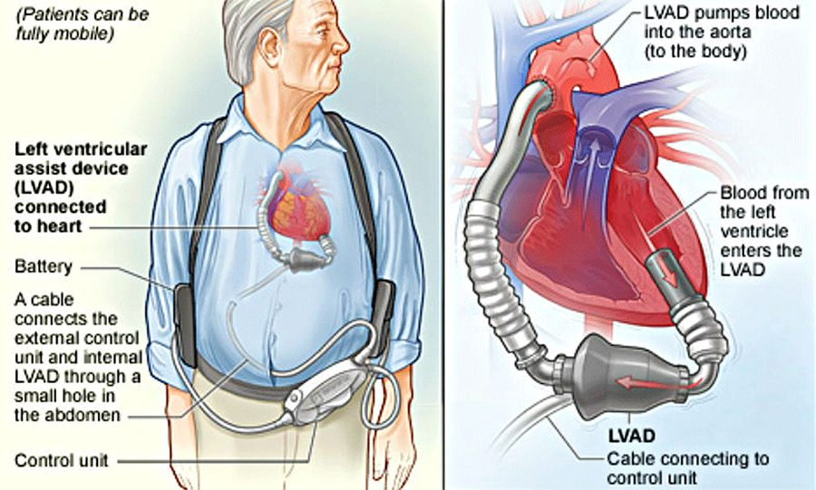
3.3 · Acute myocarditis audio after 10/01
- Inflammatory disease of the myocardium, from subtle to devastating. It usually strikes an otherwise healthy person and can cause rapidly progressive (often fatal) heart failure and arrhythmia.
- Causes: in developed countries, viral infection is presumed most frequent — parvovirus B19, human herpesvirus 6, enteroviruses (Coxsackie B), adenoviruses, hepatitis C, cytomegalovirus, human immunodeficiency virus, COVID-19 (coronavirus disease 2019). Viral myocarditis accounts for 20% of dilated cardiomyopathy. Also rheumatic fever (beta-hemolytic streptococcus; the heart is affected in 50–90%), bacteria (diphtheria, brucellosis, clostridia, Legionnaires disease, meningococcus, Mycoplasma pneumonia), Trypanosoma cruzi (Chagas), rickettsia (Q fever, Rocky Mountain spotted fever), spirochetes (leptospirosis, Lyme disease), Candida; drugs (penicillin, thiazide diuretics, tetracycline, methyldopa); toxins (lithium, arsenic, lead, copper); autoimmune disease (lupus, rheumatoid arthritis, myasthenia gravis).
- Epidemiology: 1.5 million cases worldwide in 2020; no race predilection; similar in men and women but young males are particularly susceptible.
- History: acute decompensated heart failure in someone with no underlying cardiac dysfunction or low cardiac risk. Viral: a flulike illness 1–2 weeks before (fever, myalgia, fatigue, respiratory symptoms, gastroenteritis). Then exercise intolerance, dyspnea, fluid retention, chest pain; palpitations, syncope or sudden cardiac death from ventricular arrhythmia or atrioventricular block.
- Examination: cardiogenic shock or frank heart failure — tachycardia, hypotension, raised jugular venous pressure, third heart sound, crackles, peripheral edema.
- Differential: tamponade, cardiogenic shock, cocaine cardiomyopathy, ischemic heart disease, valvular disease, coronary atherosclerosis, and the dilated, hypertrophic, peripartum and restrictive cardiomyopathies.
- Testing: blood count (leukocytosis); sedimentation rate (may be raised); troponin (myonecrosis); electrocardiogram (sinus tachycardia, arrhythmias); echocardiogram; chest X-ray (nonspecific, maybe cardiomegaly); cardiac angiography to rule out coronary ischemia as the cause of new heart failure; gadolinium-enhanced magnetic resonance imaging (shows the extent of inflammation).
- Endomyocardial biopsy is the gold standard — once other causes of heart failure are excluded; recommended for acute deterioration of unknown origin that is not responding to treatment.
- Management: a high index of suspicion is needed because many cases are not obvious. Supportive care is the mainstay; aggressive hemodynamic stabilization may be needed; as needed, vasodilators, angiotensin-converting enzyme inhibitors, diuretics, antiarrhythmics, anticoagulation.
- Prognosis: most with mild symptoms recover completely; one third later develop dilated cardiomyopathy.
Also tested
- Myocarditis work-up. Serum troponin is the indicator of cardiac myonecrosis. The rest of the work-up adds leukocytosis on the blood count, a possibly elevated sedimentation rate and electrocardiogram changes.
3.4 · Hypertrophic cardiomyopathy audio after 10/01
Left ventricular hypertrophy in the absence of a hemodynamic cause (hypertension, aortic valve disease, infiltrative or storage disease) — often asymmetric, any region, most often the interventricular septum. It carries a high incidence of sudden death and is the leading cause of sudden death in preadolescent and adolescent children.
- Mostly inherited, autosomal dominant (one mutated copy from an affected parent is enough); at least 1,500 mutations, in genes for sarcomere proteins. 1 in 500 people; males > females.
- Without obstruction: diastolic dysfunction — the thick muscle resists filling (reduced compliance) and raises left ventricular end-diastolic pressure.
- With obstruction (hypertrophic obstructive cardiomyopathy): the septum narrows the subaortic outflow tract, and systolic anterior motion of the mitral valve — high-velocity flow pulls the anterior leaflet into the tract — causes mid-systolic obstruction.
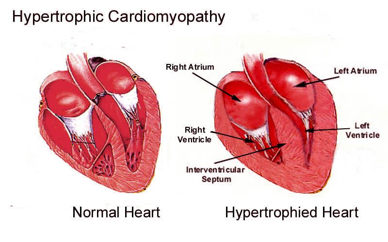
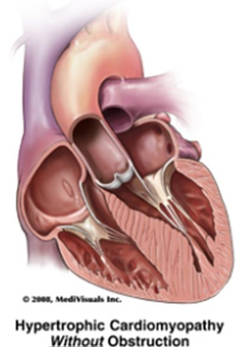
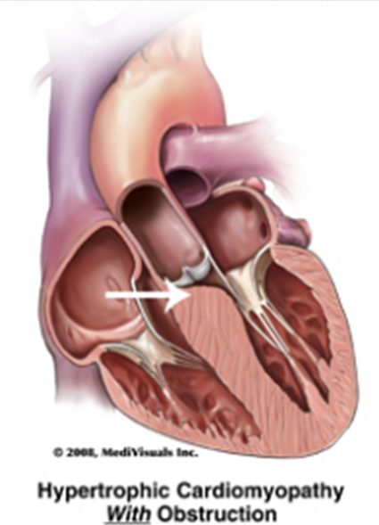
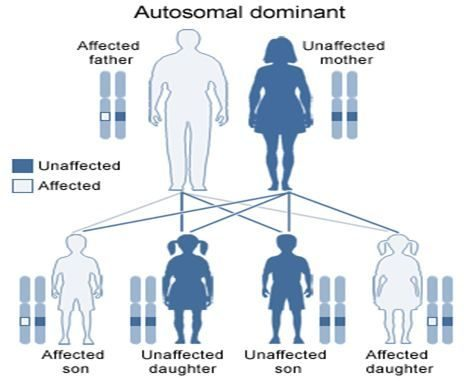
Also tested
- Nitrates in hypertrophic cardiomyopathy. Drugs that reduce preload or afterload, such as nitrates, may increase symptoms by aggravating outflow tract obstruction, so nitroglycerin should be avoided if possible.
- Ejection fraction in hypertrophic cardiomyopathy. It is usually normal, and in late stages it rises above 75% because the small ventricle nearly empties to maintain output.
- Obstructive hypertrophic cardiomyopathy refractory to drugs. Surgical septal myectomy excises part of the septal myocardium causing outflow obstruction, and mitral regurgitation from systolic anterior motion may resolve with myectomy alone, without valve replacement.
Presentation
- May be asymptomatic, found through family screening, a murmur on routine examination or an abnormal electrocardiogram.
- Dyspnea — the common presenting symptom (high diastolic filling pressure backs into the lungs); palpitations (atrial premature beats, atrial fibrillation or flutter, supraventricular or ventricular tachycardia).
- Syncope (very common; low output on exertion or arrhythmia) and presyncope on standing, relieved by lying down — both identify patients at high risk of sudden death: the work-up is urgent.
- Angina without coronary disease (outflow obstruction plus the higher oxygen demand of thick muscle, especially on exertion). Sudden cardiac death: highest in preadolescents and adolescents, related to extreme exertion; over 80% ventricular fibrillation.
- Examination: blood pressure and heart rate usually normal; pulsus bisferiens (“strike twice” — a double systolic peak, matching outflow obstruction); a forceful, sustained apical impulse, maybe displaced; a fourth heart sound (noncompliant ventricle).
- Two murmurs: the outflow murmur — crescendo-decrescendo systolic, best at the left sternal border in the 3rd–4th intercostal space, radiating to the suprasternal notch but NOT to the carotids or neck; and mitral regurgitation from systolic anterior motion — holosystolic at the apex, radiating to the axilla.
| Maneuver | Changes | Outflow murmur |
|---|---|---|
| Rapid squatting, passive leg raise | Preload ↑ | Softer |
| Handgrip | Afterload ↑ | Softer |
| Valsalva, standing | Preload ↓ | Louder |
| Amyl nitrite | Afterload ↓ | Louder |
| Inspiration and expiration | — | No effect |
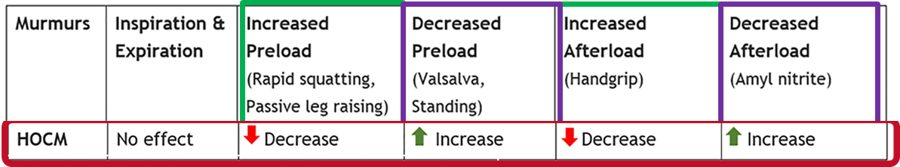
Diagnostic testing
- No specific blood test; routine labs look for aggravating factors (blood count — anemia worsens chest pain and dyspnea; fasting glucose; renal and liver function; B-type natriuretic peptide; thyroid). The chest X-ray may be normal.
- Echocardiography is the typical test of choice. The diagnosis is confirmed by unexplained wall thickness of 1.5 cm or more anywhere in the left ventricle; asymmetric septal hypertrophy is the classic pattern; small cavity; ejection fraction usually normal (above 75% late, as the small ventricle nearly empties); mitral regurgitation; systolic anterior motion; left atrial enlargement.
- Electrocardiogram: hypertrophy, atrial enlargement, conduction abnormalities, prominent Q waves in the inferior (II, III, aVF) and lateral (I, aVL, V4–V6) leads, left axis deviation.
- Cardiac magnetic resonance imaging when the echocardiogram is questionable (mitral valve and papillary muscles); exercise echocardiography (functional capacity, ischemia, arrhythmia, obstruction).
- Ambulatory electrocardiogram for 24–48 hours to assess the risk of ventricular arrhythmia and sudden death.
- Catheterization is not needed for diagnosis — only before a pacemaker or surgery. Genetic testing is available but does not change treatment.
- Differential: aortic stenosis, mitral regurgitation, hypertensive left ventricular hypertrophy, athletic heart, restrictive cardiomyopathy.
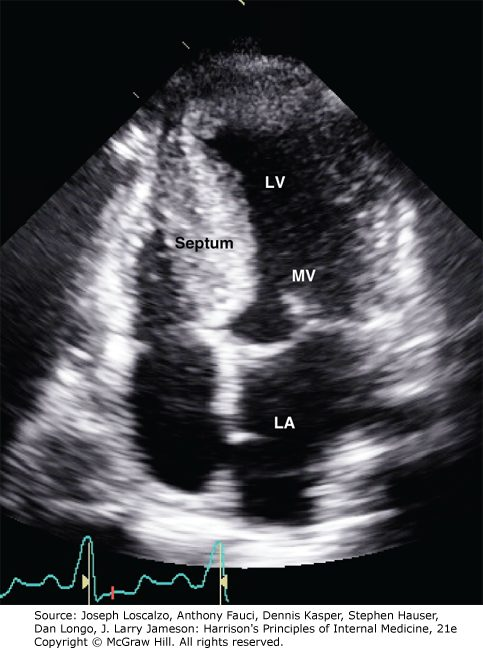
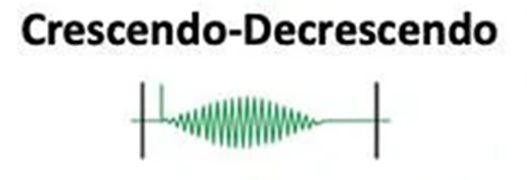
Management
- Outflow obstruction: a beta blocker (for example metoprolol) is the initial medication; non-dihydropyridine calcium channel blockers (verapamil, diltiazem) are the alternative.
- Avoid drugs that lower preload or afterload — they worsen the obstruction: nitrates; diuretics only with caution (avoid dehydration). Avoid positive inotropes — digoxin, epinephrine, norepinephrine — which raise contractility, ischemia risk and arrhythmias.
- Sudden death prevention: amiodarone (proven to reduce sudden cardiac death, with or without obstruction) and disopyramide; an implantable cardioverter-defibrillator.
- Atrial fibrillation: anticoagulation to prevent embolic stroke; amiodarone (converts atrial fibrillation and flutter and suppresses recurrence); radiofrequency ablation.
- Surgical myectomy excises part of the septum; mitral regurgitation may resolve with it. Alcohol septal ablation injects alcohol down the first septal branch of the left anterior descending artery, making a therapeutic infarct of the upper septum — it takes months for the septum to thin.
- Education: mild to moderate, noncompetitive recreational activity; stay hydrated; avoid excess alcohol.
- Prognosis: variable; sudden cardiac death is the leading cause of death; heart failure symptoms progress gradually; transplantation if unresponsive to therapy.
3.5 · Restrictive cardiomyopathy audio after 10/01
- Rare — the least common cardiomyopathy. Impaired diastolic filling with a reasonably preserved chamber size; wall thickness normal or slightly increased (“stiff, but not necessarily thickened”).
- Stiff walls → poor filling → reduced output from reduced filling volume; ejection fraction preserved until late; systolic function usually normal. Both atria enlarge; atrial fibrillation is common; right heart failure is often more prominent. Fibrosis of the sinoatrial and atrioventricular nodes can cause heart block.
- Causes: idiopathic; infiltrative — amyloidosis, the most common in the United States; storage — hemochromatosis (iron); genetic (less common than in other types); inflammatory — cardiac sarcoidosis (granulomas); treatment-related — mediastinal radiation and chemotherapy (inflammation, then fibrosis, then restriction).
- History: often presents late with pronounced symptoms; prior radiation, chemotherapy or systemic disease. Right-sided failure (abdominal pain from hepatomegaly, bilateral pedal edema, ascites), progressive exercise intolerance and dyspnea, orthopnea, paroxysmal nocturnal dyspnea, palpitations from atrial fibrillation (atrial thrombus risk), fatigue, syncope.
- Examination: more comfortable sitting; right failure may dominate although both sides have high filling pressures; elevated jugular venous pressure; first and second heart sounds normal but perhaps distant; secondary mitral or tricuspid regurgitation; a fourth heart sound if there is no regurgitation; peripheral edema; rales; congestive hepatomegaly, hepatojugular reflux, ascites. Kussmaul sign may be present — a paradoxical rise in jugular venous pressure with inspiration (resistance to right ventricular filling); it is also common in constrictive pericarditis.
- Differential: constrictive pericarditis — must be differentiated; acute pericarditis; tamponade; valvular disease; hypertrophic cardiomyopathy.
Also tested
- Pacemaker in restrictive cardiomyopathy. Nodal fibrosis of the sinoatrial and atrioventricular nodes can cause heart block, so a permanent pacemaker is placed for conduction system disease.
- Diuretics in restrictive cardiomyopathy. They treat pulmonary and systemic congestion but are used with caution, because they lower preload and stiff ventricles need preload to maintain cardiac output.
Diagnostic testing
- Electrocardiogram: depends on stage and cause; low QRS voltage in amyloidosis; atrial fibrillation and bundle branch blocks common.
- Chest X-ray: cardiomegaly from atrial enlargement; congestion and effusions.
- Echocardiogram: preserved ejection fraction (may fall late), marked atrial enlargement, near-normal ventricular function and cavity, normal or thick walls, abnormal diastolic function. Not definitive on its own, because restrictive cardiomyopathy and constrictive pericarditis look alike.
- Cardiac magnetic resonance imaging separates them — pericardial thickening means pericarditis; it also helps when no cause has been found.
- Catheterization for ventricular pressure tracings. Endomyocardial biopsy when imaging and genetic testing are negative, or when tissue would confirm or exclude a diagnosis that changes management.
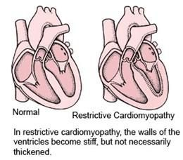
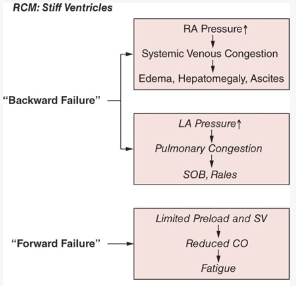
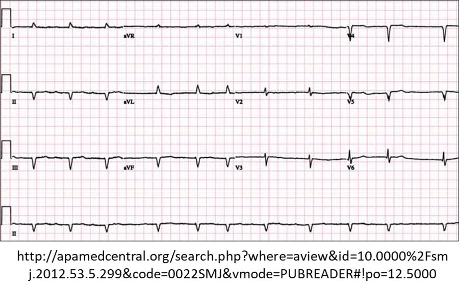
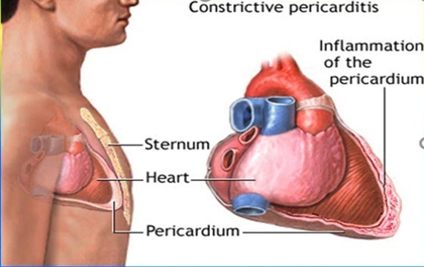
Management
- Treat the underlying disorder.
- Diuretics for pulmonary and systemic congestion — with caution: stiff ventricles depend on preload to keep up output.
- Beta blockers and verapamil or diltiazem may help by lengthening filling time, improving relaxation and damping sympathetic drive.
- Anticoagulation to prevent embolism from atrial thrombi; permanent pacemaker for conduction disease; cardiac transplantation.
- Prognosis: the poorest of all the heart muscle diseases.
3.6 · Stress (Takotsubo) cardiomyopathy audio after 10/01
- “Broken heart syndrome”; takotsubo is Japanese for an octopus trap, a round-bottomed, narrow-necked pot.
- Transient regional systolic dysfunction, mainly of the left ventricle, that mimics acute coronary syndrome without angiographic coronary disease or acute plaque rupture. Cause unknown.
- 90% are postmenopausal women. Trigger: a significant emotional or physical stressor — death of a loved one, bad financial news, natural disaster, a new diagnosis, surgery, withdrawal from illicit drugs, near drowning. Patients tend to have low or no cardiac risk factors.
- Presentation: chest pain and dyspnea most common; palpitations, nausea, vomiting, syncope. The examination is nonspecific and may look like acute coronary syndrome or acute heart failure — anxious, diaphoretic, fast or slow arrhythmias.
- Testing: troponin I and T usually elevated; B-type natriuretic peptide frequently elevated; electrocardiogram with ST elevation and T-wave inversion; transthoracic echocardiogram with hypokinesis or akinesis of the mid and apical segments of the left ventricle. Confirmed by cardiac catheterization — most often normal coronary arteries.
- Management: it mimics acute coronary syndrome with no reliable early differences, so follow the acute coronary syndrome protocols; admit to cardiology; empiric, supportive care — beta blockers helpful, anticoagulation if there is a left ventricular thrombus, diuretics if there is heart failure.
- Prognosis: most recover completely.
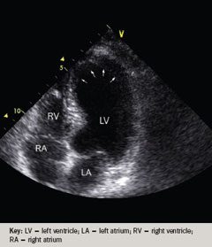
Also tested
- Laboratory results in Takotsubo (stress) cardiomyopathy. Troponin I and T are usually elevated and B-type natriuretic peptide is frequently elevated, which adds to the resemblance to acute coronary syndrome.
- Takotsubo (stress) cardiomyopathy treatment. Supportive treatment depends on presentation: anticoagulation if a left ventricular thrombus is present, diuretics if heart failure is present, and beta blockers.
3.7 · The conditions, point by point audio after 10/01
Dilated cardiomyopathy
Defining feature: a dilated, thin-walled, poorly contracting ventricle (ejection fraction below 40%) without severe coronary disease or pressure/volume overload
- Definition
- The most common cardiomyopathy: dilation and impaired contraction of one or both ventricles, producing systolic dysfunction and a globular heart.
- Who gets it
- Ages 20–60 mostly; males > females; high rate in African Americans; 10,000 deaths and 46,000 hospitalizations a year in the United States.
- Risk factors
- Idiopathic and familial (up to 35%, autosomal dominant); viral or Chagas myocarditis; chemotherapy; long-term excess alcohol; thiamine deficiency; lupus, rheumatoid arthritis; late pregnancy to 6 months after delivery (peripartum).
- Classic signs & symptoms
- Progressive dyspnea on exertion, fatigue, palpitations, orthopnea, paroxysmal nocturnal dyspnea, edema with rising weight and girth.
- Physical exam findings
- Laterally displaced point of maximal impulse, third heart sound, mitral and tricuspid regurgitation murmurs, jugular venous distension, narrow pulse pressure, crackles, cool extremities, hepatojugular reflux, ascites.
- Diagnostics / tests
- Electrocardiogram usually abnormal (a normal one almost rules it out); echocardiogram (dilated thin walls, ejection fraction below 40%); chest radiograph (cardiomegaly, Kerley B lines); B-type natriuretic peptide (below 100 pg/mL excludes heart failure); cardiac magnetic resonance imaging; biopsy rarely.
- First-line treatment
- As chronic heart failure: every patient gets a beta blocker and an angiotensin-converting enzyme inhibitor; loop diuretics; spironolactone; sacubitril/valsartan. Defibrillator if ejection fraction stays below 35%; biventricular pacing; assist device; transplant. Remove the cause; sodium restriction; genetic counseling.
- Complications
- Mitral and tricuspid regurgitation, arrhythmias, thromboembolism, sudden death; 50% mortality at 5 years once symptomatic.
Slides 16–45
Acute myocarditis
Defining feature: new heart failure in a previously healthy young person 1–2 weeks after a flulike illness
- Definition
- Inflammatory disease of the myocardium, from subtle to devastating.
- Who gets it
- Otherwise healthy people; young males particularly susceptible; 1.5 million cases worldwide in 2020.
- Risk factors
- Viral infection (most frequent in developed countries); rheumatic fever; bacterial, parasitic, rickettsial, spirochetal and fungal infections; drugs; toxins; autoimmune disease.
- Classic signs & symptoms
- Viral prodrome (fever, myalgia, fatigue, respiratory or gastrointestinal symptoms), then dyspnea, exercise intolerance, fluid retention, chest pain, palpitations, syncope.
- Physical exam findings
- Cardiogenic shock or frank heart failure: tachycardia, hypotension, raised jugular venous pressure, third heart sound, crackles, edema.
- Diagnostics / tests
- Troponin, blood count (leukocytosis), sedimentation rate, electrocardiogram, echocardiogram, chest X-ray, angiography to exclude ischemia, gadolinium magnetic resonance imaging; endomyocardial biopsy is the gold standard.
- First-line treatment
- Supportive care (the mainstay), hemodynamic stabilization as needed; vasodilators, angiotensin-converting enzyme inhibitors, diuretics, antiarrhythmics, anticoagulation as needed.
- Complications
- Rapidly progressive heart failure, ventricular arrhythmia or atrioventricular block, sudden death; one third later develop dilated cardiomyopathy.
Slides 46–56
Hypertrophic cardiomyopathy (with or without obstruction)
Defining feature: unexplained asymmetric septal hypertrophy (1.5 cm or more) with a systolic murmur that gets louder with Valsalva or standing
- Definition
- Left ventricular hypertrophy without a hemodynamic cause, usually asymmetric and septal; obstructive when the septum and systolic anterior motion narrow the outflow tract.
- Who gets it
- 1 in 500; males > females; the leading cause of sudden death in preadolescents and adolescents.
- Risk factors
- Autosomal dominant inheritance (sarcomere genes) — a family history prompts evaluation; extreme exertion triggers sudden death.
- Classic signs & symptoms
- Dyspnea (commonest), palpitations, exertional syncope and presyncope on standing (urgent work-up), angina without coronary disease; may be asymptomatic.
- Physical exam findings
- Normal blood pressure and heart rate; pulsus bisferiens; forceful sustained apical impulse; fourth heart sound; crescendo-decrescendo murmur at the left sternal border not radiating to the carotids; apical holosystolic mitral regurgitation.
- Diagnostics / tests
- Echocardiography (test of choice); electrocardiogram (hypertrophy, inferior and lateral Q waves, left axis deviation); cardiac magnetic resonance imaging; exercise echocardiography; 24–48-hour ambulatory monitoring; catheterization only before invasive therapy; genetic testing does not change treatment.
- First-line treatment
- Beta blocker first for obstruction, then verapamil or diltiazem; avoid nitrates, dehydrating diuretics and positive inotropes; amiodarone, defibrillator; myectomy or alcohol septal ablation; noncompetitive activity, hydration, little alcohol.
- Complications
- Sudden cardiac death (the leading cause of death; over 80% ventricular fibrillation); atrial fibrillation and embolic stroke; progressive heart failure.
Slides 57–82
Restrictive cardiomyopathy
Defining feature: stiff, normal-size ventricles with big atria and dominant right-sided failure — and magnetic resonance imaging shows no pericardial thickening
- Definition
- Impaired diastolic filling with reasonably preserved chamber size and normal or slightly increased wall thickness.
- Who gets it
- Rare — the least common cardiomyopathy.
- Risk factors
- Amyloidosis (most common in the United States), hemochromatosis, sarcoidosis, mediastinal radiation, chemotherapy; idiopathic; genetic.
- Classic signs & symptoms
- Late presentation; right-sided failure (hepatomegaly pain, pedal edema, ascites), exercise intolerance, dyspnea, orthopnea, palpitations from atrial fibrillation, fatigue, syncope.
- Physical exam findings
- Prefers sitting; elevated jugular venous pressure; Kussmaul sign (pressure rises with inspiration); distant heart sounds; fourth heart sound if no regurgitation; rales, hepatojugular reflux, ascites.
- Diagnostics / tests
- Electrocardiogram (low voltage in amyloid, atrial fibrillation, bundle branch block); chest X-ray (atrial cardiomegaly); echocardiogram (preserved ejection fraction, big atria) — not definitive; cardiac magnetic resonance imaging separates it from constrictive pericarditis; catheterization; endomyocardial biopsy.
- First-line treatment
- Treat the cause; cautious diuretics; beta blockers, verapamil or diltiazem; anticoagulation for atrial thrombi; pacemaker for heart block; transplant.
- Complications
- Atrial fibrillation with atrial thrombus and embolism; heart block; the poorest prognosis of all heart muscle diseases.
Slides 83–99
Stress (Takotsubo) cardiomyopathy
Defining feature: a postmenopausal woman after a major stressor with an acute-coronary-syndrome picture — and normal coronaries at catheterization
- Definition
- Transient regional left ventricular systolic dysfunction that mimics acute coronary syndrome without coronary disease or plaque rupture.
- Who gets it
- 90% postmenopausal women, usually with low or no cardiac risk factors.
- Risk factors
- A significant emotional or physical stressor (bereavement, financial loss, disaster, new illness, surgery, drug withdrawal, near drowning). Cause unknown.
- Classic signs & symptoms
- Chest pain and dyspnea (most common); palpitations, nausea, vomiting, syncope.
- Physical exam findings
- Nonspecific; may look like acute coronary syndrome or acute heart failure; anxious, diaphoretic, fast or slow arrhythmias.
- Diagnostics / tests
- Troponin usually and B-type natriuretic peptide frequently elevated; ST elevation and T-wave inversion; echocardiogram with mid and apical hypokinesis or akinesis; confirmed by catheterization (normal coronaries).
- First-line treatment
- Follow acute coronary syndrome protocols; admit to cardiology; supportive care — beta blockers, anticoagulation for a left ventricular thrombus, diuretics for heart failure.
- Complications
- Left ventricular thrombus, heart failure; most recover completely.
Slides 100–104
Also tested
- Cardiac catheterization in hypertrophic cardiomyopathy. It is not required for the diagnosis; it is obtained only when invasive therapy such as a pacemaker or surgery is planned.
- Restrictive cardiomyopathy on echocardiogram. Marked enlargement of one or both atria (big atria) with near-normal ventricles: near-normal left ventricular systolic function and cavity size, preserved ejection fraction and abnormal diastolic function.
- Mitral regurgitation in dilated cardiomyopathy. As the ventricle dilates, the valve apparatus is distorted, so functional mitral regurgitation, appearing earlier, and tricuspid regurgitation commonly develop; the mitral murmur is holosystolic at the apex, radiating to the axilla.
- Restrictive cardiomyopathy testing. Cardiac catheterization is useful to evaluate ventricular pressure tracings, alongside cardiac magnetic resonance imaging and, when needed, endomyocardial biopsy.
- Sudden death risk in hypertrophic cardiomyopathy. Ambulatory electrocardiogram monitoring for 24 to 48 hours should be performed to assess the risk of ventricular arrhythmias and sudden cardiac death.
3.8 · Populations, rehabilitative and palliative care audio after 10/01
| Population | Strategy (slides 105–106) |
|---|---|
| Adolescent | Genetic screening for hypertrophic cardiomyopathy; activity restriction for high-risk individuals. (Hypertrophic cardiomyopathy is the leading cause of sudden death at this age.) |
| Adult | Guideline-directed medical therapy (angiotensin-converting enzyme inhibitors, beta blockers, angiotensin receptor blockers, diuretics); devices (implantable defibrillator, biventricular pacemaker); lifestyle (sodium restriction, alcohol cessation); consider an assist device or transplant in advanced disease. |
| Elderly | Therapy tailored to comorbidities and frailty; cautious use of diuretics and vasodilators; focus on symptom control and quality of life; palliative care discussions in advanced stages. |
Two lines on slide 105 — “medication management for symptomatic relief” and “ICD (implantable cardioverter-defibrillator) placement in select cases” — sit between the adolescent and adult lists without belonging clearly to either.
| Rehabilitative care (slide 107) | Palliative care (slide 107) |
|---|---|
| Cardiac rehabilitation to improve exercise tolerance and quality of life; education on medication adherence, nutrition and symptom monitoring; psychological support for chronic illness; home-based rehab for elderly or mobility-limited patients. | Symptom management (dyspnea, fatigue, edema); advance care planning and goals-of-care discussions; support for caregivers and family; hospice referral in end-stage cardiomyopathy. |
Also tested
- Cardiac rehabilitation. Cardiac rehabilitation programs improve exercise tolerance and quality of life, with education on medication adherence, nutrition and symptom monitoring, and psychological support for chronic illness.
- Adolescents and hypertrophic cardiomyopathy. Age-specific strategies include genetic screening, and disease detected in a family member is a common reason evaluation begins. The condition is autosomal dominant, so one affected parent is enough to pass it on.
- Palliative care in cardiomyopathy. It covers symptom management of dyspnea, fatigue and edema, advance care planning and goals-of-care discussions, support for caregivers, and hospice referral in end-stage disease.
- Activity restriction in hypertrophic cardiomyopathy. Activity restriction for high-risk individuals is an adolescent strategy, because sudden death is highest in preadolescents and adolescents and is related to extreme exertion.
- Cardiac rehabilitation in cardiomyopathy. Programs aim for better exercise tolerance and quality of life, with education on medications, nutrition and symptom monitoring and psychological support.
★ Quick reference
Which test answers which question
| Question | Initial / screening | Next, best or gold standard |
|---|---|---|
| Deep vein thrombosis? | Wells score (outpatient and emergency department), then D-dimer if the score is zero or less or 1–2 (sensitive, not specific) | Venous duplex ultrasound (straight away if the score is 3 or more); contrast venography is the gold standard, replaced by ultrasound |
| Superficial thrombophlebitis? | History and examination | Venous duplex ultrasound (gold standard): wall thickening, with a clot = thrombophlebitis |
| Chronic venous insufficiency? | Venous duplex ultrasound; ankle-brachial index before compression | Catheter-based venography (gold standard, rarely needed) |
| Varicose veins? | Clinical examination with the leg dependent | Venous duplex ultrasound (confirms and maps reflux) |
| Peripheral arterial disease? | Ankle-brachial index; duplex ultrasound (mainstay imaging) | Conventional angiography (to guide intervention) |
| Carotid stenosis? | Duplex ultrasonography | Digital subtraction angiography (never for screening) |
| Abdominal aortic aneurysm? | Abdominal ultrasound (and for serial size) | Computed tomography angiography (diagnosis and planning) |
| Thoracic aortic aneurysm? | Chest X-ray (widened mediastinum) | Computed tomography angiography (most widely used) |
| Aortic dissection? | Electrocardiogram may be normal | Computed tomography of chest and abdomen for extent |
| Dilated cardiomyopathy? | Electrocardiogram (normal almost rules out) | Echocardiogram (dilated, thin walls) |
| Myocarditis? | Troponin, electrocardiogram, echocardiogram | Endomyocardial biopsy |
| Hypertrophic cardiomyopathy? | Echocardiography (test of choice; wall 1.5 cm or more) | Cardiac magnetic resonance imaging when the echocardiogram is questionable |
| Restrictive vs constrictive? | Echocardiogram (not definitive) | Cardiac magnetic resonance imaging (pericardial thickening = pericarditis) |
| Takotsubo? | Troponin, ST elevation, echo apical hypokinesis | Catheterization — normal coronaries |
Numbers that decide management
| Number | Decision |
|---|---|
| Wells score: zero or less / 1–2 / 3 or more | D-dimer first / D-dimer / ultrasound directly, no D-dimer (outpatient and emergency department only) |
| Venous thromboembolism: minimum 3 months for everyone; then 3 months / 3–6 months / indefinite | Major transient trigger / minor transient trigger / unprovoked first clot |
| Creatinine clearance below 30 mL/min | Hospitalize to start anticoagulation for deep vein thrombosis |
| Leg elevation above heart level; recheck within 7–10 days | Chronic venous insufficiency treatment; superficial thrombophlebitis follow-up |
| Ankle-brachial index 0.4–0.9 / 0–0.4 / above 1.3 | Claudication / rest pain and tissue loss / non-compressible (calcified) arteries |
| Under 14 days | Catheter-directed thrombolysis for acute limb ischemia |
| Carotid below 50% / symptomatic above 70% / asymptomatic above 80% with over 5 years to live | Medical / surgery / surgery |
| Abdominal aorta above 3 cm | Aneurysm; 3.0–3.9 cm ultrasound every 3 years; 4.0–5.4 cm every 6–12 months |
| 4.5 cm / 5.0 cm women / above 5.5 cm men / 0.5 cm in 6 months | Specialist referral / repair / repair / repair |
| Thoracic: ascending above 5.5 cm, descending above 6.0 cm, growth above 0.5 cm a year | Repair (and every symptomatic one) |
| Pseudoaneurysm below 2 cm | Watch and wait |
| Dissection systolic 100–120 mmHg | Target with esmolol or nitroprusside |
| Ejection fraction below 35% after maximal therapy | Implantable defibrillator (dilated cardiomyopathy) |
| Wall thickness 1.5 cm or more | Confirms hypertrophic cardiomyopathy on echocardiography |
The things that are NOT what they look like
| It looks like… | …but |
|---|---|
| A long flight adds a Wells point | It does not: the item is bedridden after surgery or immobilized in a cast or plaster (travel is a risk factor, not a criterion) |
| A positive D-dimer means deep vein thrombosis | It is sensitive but not specific: it means fibrinolysis somewhere; its use is to rule out |
| A high Wells score still needs a D-dimer first | At 3 or more, skip it and order the ultrasound |
| Propping the legs on a stool is elevation | Elevation must be above heart level |
| Compression stockings suit every swollen leg | Rule out peripheral artery disease with an ankle-brachial index first; stockings are graduated, tightest at the ankle |
| Superficial thrombophlebitis needs heparin | NSAIDs first; anticoagulate only for extensive clot burden |
| A dialysis fistula should be silent | A healthy one has a thrill and a soft bruit; no bruit means refer |
| Rest pain should ease with rest | Critical limb ischemia pain eases by dangling the leg or walking — the paradox |
| An ankle-brachial index above 1.3 is reassuring | It is abnormal — calcified, non-compressible arteries (diabetes) |
| A painful blue toe means absent pulses | Atheroembolism leaves the distal pulses palpable |
| Every limb needs imaging before treatment | Category III (irreversible) needs amputation, not imaging; IIB goes straight to the surgical suite |
| Screening catches carotid disease early | Screening asymptomatic adults is recommended against |
| Diabetes raises every vascular risk | Diabetes is protective against abdominal aortic aneurysm; women’s aneurysms rupture more often |
| An abdominal bruit points to an aneurysm | It is nonspecific; the pulsatile mass is virtually diagnostic |
| A normal electrocardiogram excludes dissection | It may be normal |
| Diuretics and nitrates help any failing heart | They worsen hypertrophic outflow obstruction; use diuretics cautiously in restrictive disease too |
| A louder murmur on standing means a worse valve | Standing and Valsalva make the hypertrophic murmur louder; squatting and handgrip soften it |
| Chest pain, ST elevation and troponin = a heart attack | In a stressed postmenopausal woman with normal coronaries it is Takotsubo — still managed by the acute coronary syndrome protocol at first |